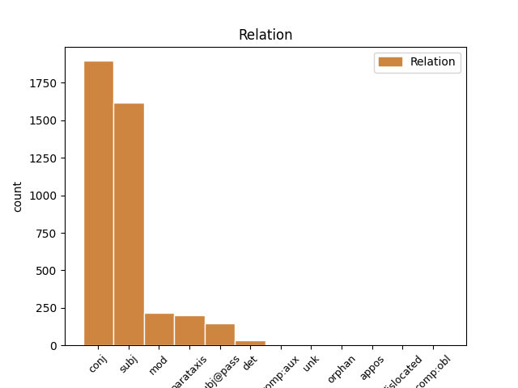
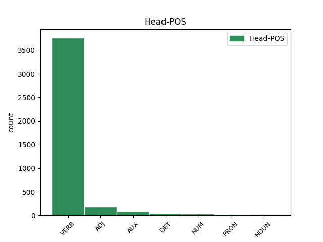
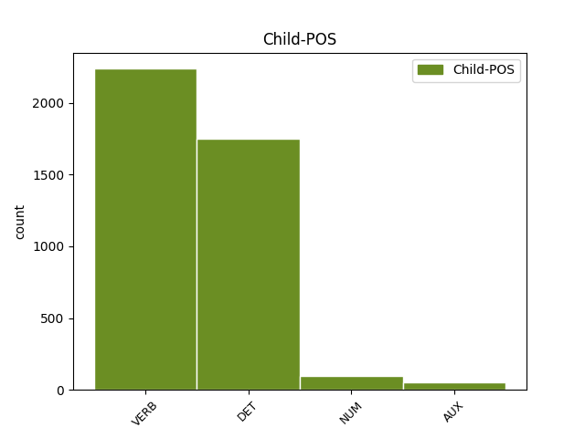

Distribution of features within this leaf



Agreement Rules sorted by frequency.
- When the dependent token is the conjunct(conj) of the head token, and the dependent token is VERB.
1 و _ _ _ _ 0 _ _ _
2 قالت _ _ _ _ 0 _ _ _
3 وكالة _ _ _ _ 0 _ _ _
4 انباء _ _ _ _ 0 _ _ _
5 الشرق _ _ _ _ 0 _ _ _
6 الاوسط _ _ _ _ 0 _ _ _
7 المصرية _ _ _ _ 0 _ _ _
8 ان _ _ _ _ 0 _ _ _
9 شعث _ _ _ _ 0 _ _ _
10 ابلغ أَبلَغ VERB VP-A-3MS-- Aspect=Perf|Gender=Masc|Number=Sing|Person=3|Voice=Act 0 _ _ _
11 ماهر _ _ _ _ 0 _ _ _
12 نتائج _ _ _ _ 0 _ _ _
13 المحادثات _ _ _ _ 0 _ _ _
14 التى _ _ _ _ 0 _ _ _
15 أجرا _ _ _ _ 0 _ _ _
16 ها _ _ _ _ 0 _ _ _
17 باول _ _ _ _ 0 _ _ _
18 مع _ _ _ _ 0 _ _ _
19 رئيس _ _ _ _ 0 _ _ _
20 الوزراء _ _ _ _ 0 _ _ _
21 الفلسطينى _ _ _ _ 0 _ _ _
22 محمود _ _ _ _ 0 _ _ _
23 عباس _ _ _ _ 0 _ _ _
24 / _ _ _ _ 0 _ _ _
25 أبو _ _ _ _ 0 _ _ _
26 مازن _ _ _ _ 0 _ _ _
27 / _ _ _ _ 0 _ _ _
28 فى _ _ _ _ 0 _ _ _
29 اريحا _ _ _ _ 0 _ _ _
30 فى _ _ _ _ 0 _ _ _
31 وقت _ _ _ _ 0 _ _ _
32 سابق _ _ _ _ 0 _ _ _
33 من _ _ _ _ 0 _ _ _
34 اليوم _ _ _ _ 0 _ _ _
35 حيث _ _ _ _ 0 _ _ _
36 اكد أَكَّد VERB VP-A-3MS-- Aspect=Perf|Gender=Masc|Number=Sing|Person=3|Voice=Act 10 conj _ Gloss=affirm,assure,confirm,emphasize,guarantee|LTranslit=ʾakkad|Root='_k_d|Translit=ʾakkada|Vform=أَكَّدَ
37 الجانب _ _ _ _ 0 _ _ _
38 الفلسطينى _ _ _ _ 0 _ _ _
39 على _ _ _ _ 0 _ _ _
40 موقف _ _ _ _ 0 _ _ _
41 ه _ _ _ _ 0 _ _ _
42 الثابت _ _ _ _ 0 _ _ _
43 إزاء _ _ _ _ 0 _ _ _
44 خريطة _ _ _ _ 0 _ _ _
45 الطريق _ _ _ _ 0 _ _ _
46 ، _ _ _ _ 0 _ _ _
47 الخطة _ _ _ _ 0 _ _ _
48 السلمية _ _ _ _ 0 _ _ _
49 التى _ _ _ _ 0 _ _ _
50 أعدت _ _ _ _ 0 _ _ _
51 ها _ _ _ _ 0 _ _ _
52 الولايات _ _ _ _ 0 _ _ _
53 المتحدة _ _ _ _ 0 _ _ _
54 ل _ _ _ _ 0 _ _ _
55 إحلال _ _ _ _ 0 _ _ _
56 السلام _ _ _ _ 0 _ _ _
57 فى _ _ _ _ 0 _ _ _
58 المنطقة _ _ _ _ 0 _ _ _
59 و _ _ _ _ 0 _ _ _
60 إقامة _ _ _ _ 0 _ _ _
61 دولة _ _ _ _ 0 _ _ _
62 فلسطينية _ _ _ _ 0 _ _ _
63 مستقلة _ _ _ _ 0 _ _ _
64 عام _ _ _ _ 0 _ _ _
65 2005 _ _ _ _ 0 _ _ _
66 ب _ _ _ _ 0 _ _ _
67 جانب _ _ _ _ 0 _ _ _
68 إسرائيل _ _ _ _ 0 _ _ _
69 . _ _ _ _ 0 _ _ _
1 و _ _ _ _ 0 _ _ _
2 قالت _ _ _ _ 0 _ _ _
3 وكالة _ _ _ _ 0 _ _ _
4 انباء _ _ _ _ 0 _ _ _
5 الشرق _ _ _ _ 0 _ _ _
6 الاوسط _ _ _ _ 0 _ _ _
7 المصرية _ _ _ _ 0 _ _ _
8 ان _ _ _ _ 0 _ _ _
9 شعث _ _ _ _ 0 _ _ _
10 ابلغ _ _ _ _ 0 _ _ _
11 ماهر _ _ _ _ 0 _ _ _
12 نتائج _ _ _ _ 0 _ _ _
13 المحادثات _ _ _ _ 0 _ _ _
14 التى _ _ _ _ 0 _ _ _
15 أجرا _ _ _ _ 0 _ _ _
16 ها _ _ _ _ 0 _ _ _
17 باول _ _ _ _ 0 _ _ _
18 مع _ _ _ _ 0 _ _ _
19 رئيس _ _ _ _ 0 _ _ _
20 الوزراء _ _ _ _ 0 _ _ _
21 الفلسطينى _ _ _ _ 0 _ _ _
22 محمود _ _ _ _ 0 _ _ _
23 عباس _ _ _ _ 0 _ _ _
24 / _ _ _ _ 0 _ _ _
25 أبو _ _ _ _ 0 _ _ _
26 مازن _ _ _ _ 0 _ _ _
27 / _ _ _ _ 0 _ _ _
28 فى _ _ _ _ 0 _ _ _
29 اريحا _ _ _ _ 0 _ _ _
30 فى _ _ _ _ 0 _ _ _
31 وقت _ _ _ _ 0 _ _ _
32 سابق _ _ _ _ 0 _ _ _
33 من _ _ _ _ 0 _ _ _
34 اليوم _ _ _ _ 0 _ _ _
35 حيث _ _ _ _ 0 _ _ _
36 اكد _ _ _ _ 0 _ _ _
37 الجانب _ _ _ _ 0 _ _ _
38 الفلسطينى _ _ _ _ 0 _ _ _
39 على _ _ _ _ 0 _ _ _
40 موقف _ _ _ _ 0 _ _ _
41 ه _ _ _ _ 0 _ _ _
42 الثابت _ _ _ _ 0 _ _ _
43 إزاء _ _ _ _ 0 _ _ _
44 خريطة _ _ _ _ 0 _ _ _
45 الطريق _ _ _ _ 0 _ _ _
46 ، _ _ _ _ 0 _ _ _
47 الخطة _ _ _ _ 0 _ _ _
48 السلمية _ _ _ _ 0 _ _ _
49 التى اَلَّذِي DET SR----FS2- Case=Gen|Gender=Fem|Number=Sing|PronType=Rel 50 subj _ Gloss=that,which|LTranslit=allaḏī|Root=l|Translit=allatī|Vform=اَلَّتِي
50 أعدت أَعَدّ VERB VP-A-3FS-- Aspect=Perf|Gender=Fem|Number=Sing|Person=3|Voice=Act 0 _ _ _
51 ها _ _ _ _ 0 _ _ _
52 الولايات _ _ _ _ 0 _ _ _
53 المتحدة _ _ _ _ 0 _ _ _
54 ل _ _ _ _ 0 _ _ _
55 إحلال _ _ _ _ 0 _ _ _
56 السلام _ _ _ _ 0 _ _ _
57 فى _ _ _ _ 0 _ _ _
58 المنطقة _ _ _ _ 0 _ _ _
59 و _ _ _ _ 0 _ _ _
60 إقامة _ _ _ _ 0 _ _ _
61 دولة _ _ _ _ 0 _ _ _
62 فلسطينية _ _ _ _ 0 _ _ _
63 مستقلة _ _ _ _ 0 _ _ _
64 عام _ _ _ _ 0 _ _ _
65 2005 _ _ _ _ 0 _ _ _
66 ب _ _ _ _ 0 _ _ _
67 جانب _ _ _ _ 0 _ _ _
68 إسرائيل _ _ _ _ 0 _ _ _
69 . _ _ _ _ 0 _ _ _
1 قرر قَرَّر VERB VP-A-3MS-- Aspect=Perf|Gender=Masc|Number=Sing|Person=3|Voice=Act 0 _ _ _
2 مجلس _ _ _ _ 0 _ _ _
3 الوزراءالكويتي _ _ _ _ 0 _ _ _
4 اليوم _ _ _ _ 0 _ _ _
5 ارسال _ _ _ _ 0 _ _ _
6 ثمانى _ _ _ _ 0 _ _ _
7 وحدات _ _ _ _ 0 _ _ _
8 ل _ _ _ _ 0 _ _ _
9 تكرير _ _ _ _ 0 _ _ _
10 و _ _ _ _ 0 _ _ _
11 تحلية _ _ _ _ 0 _ _ _
12 المياه _ _ _ _ 0 _ _ _
13 الى _ _ _ _ 0 _ _ _
14 العراق _ _ _ _ 0 _ _ _
15 ل _ _ _ _ 0 _ _ _
16 توفير _ _ _ _ 0 _ _ _
17 المياه _ _ _ _ 0 _ _ _
18 الصالحة _ _ _ _ 0 _ _ _
19 ل _ _ _ _ 0 _ _ _
20 الشرب _ _ _ _ 0 _ _ _
21 ل _ _ _ _ 0 _ _ _
22 الشعب _ _ _ _ 0 _ _ _
23 العراقي _ _ _ _ 0 _ _ _
24 في _ _ _ _ 0 _ _ _
25 مبادرة _ _ _ _ 0 _ _ _
26 كويتية _ _ _ _ 0 _ _ _
27 ل _ _ _ _ 0 _ _ _
28 الحد _ _ _ _ 0 _ _ _
29 من _ _ _ _ 0 _ _ _
30 انتشار _ _ _ _ 0 _ _ _
31 مرض _ _ _ _ 0 _ _ _
32 الكوليرا _ _ _ _ 0 _ _ _
33 الذي _ _ _ _ 0 _ _ _
34 اكتشف _ _ _ _ 0 _ _ _
35 هناك _ _ _ _ 0 _ _ _
36 مؤخرا _ _ _ _ 0 _ _ _
37 . _ _ _ _ 0 _ _ _
38 جاء جَاء VERB VP-A-3MS-- Aspect=Perf|Gender=Masc|Number=Sing|Person=3|Voice=Act 1 parataxis _ Gloss=arrive,come,occur|LTranslit=ǧāʾ|Root=^g_y_'|Translit=ǧāʾa|Vform=جَاءَ
39 ذلك _ _ _ _ 0 _ _ _
40 فى _ _ _ _ 0 _ _ _
41 تصريح _ _ _ _ 0 _ _ _
42 خاص _ _ _ _ 0 _ _ _
43 ادلى _ _ _ _ 0 _ _ _
44 ب _ _ _ _ 0 _ _ _
45 ه _ _ _ _ 0 _ _ _
46 وزير _ _ _ _ 0 _ _ _
47 الكهرباء _ _ _ _ 0 _ _ _
48 و _ _ _ _ 0 _ _ _
49 الماء _ _ _ _ 0 _ _ _
50 و _ _ _ _ 0 _ _ _
51 وزير _ _ _ _ 0 _ _ _
52 الشؤون _ _ _ _ 0 _ _ _
53 الاجتماعية _ _ _ _ 0 _ _ _
54 و _ _ _ _ 0 _ _ _
55 العمل _ _ _ _ 0 _ _ _
56 الكويتى _ _ _ _ 0 _ _ _
57 طلال _ _ _ _ 0 _ _ _
58 العيار _ _ _ _ 0 _ _ _
59 ل _ _ _ _ 0 _ _ _
60 وكالة _ _ _ _ 0 _ _ _
61 الانباء _ _ _ _ 0 _ _ _
62 الكويتية _ _ _ _ 0 _ _ _
63 / _ _ _ _ 0 _ _ _
64 كونا _ _ _ _ 0 _ _ _
65 / _ _ _ _ 0 _ _ _
66 فى _ _ _ _ 0 _ _ _
67 اعقاب _ _ _ _ 0 _ _ _
68 الاجتماع _ _ _ _ 0 _ _ _
69 الاسبوعي _ _ _ _ 0 _ _ _
70 ل _ _ _ _ 0 _ _ _
71 مجلس _ _ _ _ 0 _ _ _
72 الوزراء _ _ _ _ 0 _ _ _
73 المنعقد _ _ _ _ 0 _ _ _
74 هنا _ _ _ _ 0 _ _ _
75 اليوم _ _ _ _ 0 _ _ _
76 . _ _ _ _ 0 _ _ _
1 و _ _ _ _ 0 _ _ _
2 دخل دَخَل VERB VP-A-3MS-- Aspect=Perf|Gender=Masc|Number=Sing|Person=3|Voice=Act 0 _ _ _
3 جيمس _ _ _ _ 0 _ _ _
4 ماجواير _ _ _ _ 0 _ _ _
5 عضو _ _ _ _ 0 _ _ _
6 فريق _ _ _ _ 0 _ _ _
7 خبراء _ _ _ _ 0 _ _ _
8 منظمة _ _ _ _ 0 _ _ _
9 الصحة _ _ _ _ 0 _ _ _
10 الذى _ _ _ _ 0 _ _ _
11 يتفقد _ _ _ _ 0 _ _ _
12 جهود _ _ _ _ 0 _ _ _
13 مكافحة _ _ _ _ 0 _ _ _
14 سارس _ _ _ _ 0 _ _ _
15 و _ _ _ _ 0 _ _ _
16 علاج _ _ _ _ 0 _ _ _
17 ه _ _ _ _ 0 _ _ _
18 فى _ _ _ _ 0 _ _ _
19 المقاطعة _ _ _ _ 0 _ _ _
20 دخل دَخَل VERB VP-A-3MS-- Aspect=Perf|Gender=Masc|Number=Sing|Person=3|Voice=Act 2 mod _ Gloss=enter|LTranslit=daḫal|Root=d__h_l|Translit=daḫala|Vform=دَخَلَ
21 الى _ _ _ _ 0 _ _ _
22 القرية _ _ _ _ 0 _ _ _
23 التى _ _ _ _ 0 _ _ _
24 تقع _ _ _ _ 0 _ _ _
25 على _ _ _ _ 0 _ _ _
26 بعد _ _ _ _ 0 _ _ _
27 60 _ _ _ _ 0 _ _ _
28 كيلومترا _ _ _ _ 0 _ _ _
29 عن _ _ _ _ 0 _ _ _
30 عاصمة _ _ _ _ 0 _ _ _
31 المقاطعة _ _ _ _ 0 _ _ _
32 شيجياتشوانج _ _ _ _ 0 _ _ _
33 . _ _ _ _ 0 _ _ _
1 يذكر _ _ _ _ 0 _ _ _
2 ان _ _ _ _ 0 _ _ _
3 المقاطعة _ _ _ _ 0 _ _ _
4 التى اَلَّذِي DET SR----FS4- Case=Acc|Gender=Fem|Number=Sing|PronType=Rel 5 subj@pass _ Gloss=that,which|LTranslit=allaḏī|Root=l|Translit=allatī|Vform=اَلَّتِي
5 تعد عَدّ VERB VIIP-3FS-- Aspect=Imp|Gender=Fem|Mood=Ind|Number=Sing|Person=3|VerbForm=Fin|Voice=Pass 0 _ _ _
6 موطنا _ _ _ _ 0 _ _ _
7 جيدا _ _ _ _ 0 _ _ _
8 ل _ _ _ _ 0 _ _ _
9 عدد _ _ _ _ 0 _ _ _
10 كبير _ _ _ _ 0 _ _ _
11 من _ _ _ _ 0 _ _ _
12 سكان _ _ _ _ 0 _ _ _
13 بكين _ _ _ _ 0 _ _ _
14 من _ _ _ _ 0 _ _ _
15 العمال _ _ _ _ 0 _ _ _
16 المهاجرين _ _ _ _ 0 _ _ _
17 قد _ _ _ _ 0 _ _ _
18 جذب _ _ _ _ 0 _ _ _
19 اهتمام _ _ _ _ 0 _ _ _
20 منظمة _ _ _ _ 0 _ _ _
21 الصحة _ _ _ _ 0 _ _ _
22 العالمية _ _ _ _ 0 _ _ _
23 ب _ _ _ _ 0 _ _ _
24 سبب _ _ _ _ 0 _ _ _
25 تنامى _ _ _ _ 0 _ _ _
26 عدد _ _ _ _ 0 _ _ _
27 حالات _ _ _ _ 0 _ _ _
28 مرض _ _ _ _ 0 _ _ _
29 الالتهاب _ _ _ _ 0 _ _ _
30 الرئوي _ _ _ _ 0 _ _ _
31 اللانمطى _ _ _ _ 0 _ _ _
32 الحاد _ _ _ _ 0 _ _ _
33 / _ _ _ _ 0 _ _ _
34 سارس _ _ _ _ 0 _ _ _
35 / _ _ _ _ 0 _ _ _
36 خلال _ _ _ _ 0 _ _ _
37 الاسابيع _ _ _ _ 0 _ _ _
38 القليلة _ _ _ _ 0 _ _ _
39 الماضية _ _ _ _ 0 _ _ _
40 . _ _ _ _ 0 _ _ _
1 صرح _ _ _ _ 0 _ _ _
2 كيكايا _ _ _ _ 0 _ _ _
3 بين _ _ _ _ 0 _ _ _
4 كاروبى _ _ _ _ 0 _ _ _
5 وزير _ _ _ _ 0 _ _ _
6 الاعلام _ _ _ _ 0 _ _ _
7 فى _ _ _ _ 0 _ _ _
8 جمهورية _ _ _ _ 0 _ _ _
9 الكونغو _ _ _ _ 0 _ _ _
10 الديمقراطية _ _ _ _ 0 _ _ _
11 هنا _ _ _ _ 0 _ _ _
12 اليوم _ _ _ _ 0 _ _ _
13 ان _ _ _ _ 0 _ _ _
14 اجمالى _ _ _ _ 0 _ _ _
15 ضحايا _ _ _ _ 0 _ _ _
16 الكارثة _ _ _ _ 0 _ _ _
17 الجوية _ _ _ _ 0 _ _ _
18 التى _ _ _ _ 0 _ _ _
19 وقعت _ _ _ _ 0 _ _ _
20 مؤخرا _ _ _ _ 0 _ _ _
21 ، _ _ _ _ 0 _ _ _
22 قد _ _ _ _ 0 _ _ _
23 يتجاوز _ _ _ _ 0 _ _ _
24 الاربع أَربَعَة NUM QV----F-4C Case=Acc|Definite=Com|Gender=Fem|NumForm=Word|NumValue=3 0 _ _ _
25 عشرة عَشَر NUM QY----F--- Gender=Fem|NumForm=Word|NumValue=2 24 mod _ Gloss=-_teen|LTranslit=ʿašar|Root=`_^s_r|Translit=ʿašrata|Vform=عَشرَةَ
26 التى _ _ _ _ 0 _ _ _
27 اعلن _ _ _ _ 0 _ _ _
28 عن _ _ _ _ 0 _ _ _
29 ها _ _ _ _ 0 _ _ _
30 حتى _ _ _ _ 0 _ _ _
31 الآن _ _ _ _ 0 _ _ _
32 . _ _ _ _ 0 _ _ _
1 لقى لَقِي VERB VP-A-3MS-- Aspect=Perf|Gender=Masc|Number=Sing|Person=3|Voice=Act 0 _ _ _
2 ثلاثة ثَلَاثَة NUM QV----M-1R Case=Nom|Definite=Cons|Gender=Masc|NumForm=Word|NumValue=3 1 subj _ Gloss=three|LTranslit=ṯalāṯat|Root=_t_l__t|Translit=ṯalāṯatu|Vform=ثَلَاثَةُ
3 جنود _ _ _ _ 0 _ _ _
4 امريكيين _ _ _ _ 0 _ _ _
5 مصرع _ _ _ _ 0 _ _ _
6 هم _ _ _ _ 0 _ _ _
7 و _ _ _ _ 0 _ _ _
8 أصيب _ _ _ _ 0 _ _ _
9 رابع _ _ _ _ 0 _ _ _
10 فى _ _ _ _ 0 _ _ _
11 شمالى _ _ _ _ 0 _ _ _
12 العراق _ _ _ _ 0 _ _ _
13 اليوم _ _ _ _ 0 _ _ _
14 عند _ _ _ _ 0 _ _ _
15 ما _ _ _ _ 0 _ _ _
16 سقطت _ _ _ _ 0 _ _ _
17 المروحية _ _ _ _ 0 _ _ _
18 التى _ _ _ _ 0 _ _ _
19 كانت _ _ _ _ 0 _ _ _
20 تقلهم _ _ _ _ 0 _ _ _
21 ، _ _ _ _ 0 _ _ _
22 و _ _ _ _ 0 _ _ _
23 هي _ _ _ _ 0 _ _ _
24 من _ _ _ _ 0 _ _ _
25 طراز _ _ _ _ 0 _ _ _
26 يواتش _ _ _ _ 0 _ _ _
27 - _ _ _ _ 0 _ _ _
28 60 _ _ _ _ 0 _ _ _
29 بلاك _ _ _ _ 0 _ _ _
30 هوك _ _ _ _ 0 _ _ _
31 فى _ _ _ _ 0 _ _ _
32 نهر _ _ _ _ 0 _ _ _
33 دجلة _ _ _ _ 0 _ _ _
34 ، _ _ _ _ 0 _ _ _
35 وفقا _ _ _ _ 0 _ _ _
36 ل _ _ _ _ 0 _ _ _
37 ما _ _ _ _ 0 _ _ _
38 أعلن _ _ _ _ 0 _ _ _
39 ه _ _ _ _ 0 _ _ _
40 مسئولو _ _ _ _ 0 _ _ _
41 البنتاجون _ _ _ _ 0 _ _ _
42 . _ _ _ _ 0 _ _ _
1 و _ _ _ _ 0 _ _ _
2 قالت _ _ _ _ 0 _ _ _
3 الصحيفة _ _ _ _ 0 _ _ _
4 ان _ _ _ _ 0 _ _ _
5 الاقتراح _ _ _ _ 0 _ _ _
6 قد _ _ _ _ 0 _ _ _
7 يحظى _ _ _ _ 0 _ _ _
8 ب _ _ _ _ 0 _ _ _
9 الترحيب _ _ _ _ 0 _ _ _
10 فى _ _ _ _ 0 _ _ _
11 المنطقة _ _ _ _ 0 _ _ _
12 ، _ _ _ _ 0 _ _ _
13 لٰكن _ _ _ _ 0 _ _ _
14 ها _ _ _ _ 0 _ _ _
15 نقلت _ _ _ _ 0 _ _ _
16 ايضا _ _ _ _ 0 _ _ _
17 عن _ _ _ _ 0 _ _ _
18 المسئول _ _ _ _ 0 _ _ _
19 الامريكى _ _ _ _ 0 _ _ _
20 الذى _ _ _ _ 0 _ _ _
21 اعلن _ _ _ _ 0 _ _ _
22 الخبر _ _ _ _ 0 _ _ _
23 قول _ _ _ _ 0 _ _ _
24 ه _ _ _ _ 0 _ _ _
25 ان _ _ _ _ 0 _ _ _
26 الرئيس _ _ _ _ 0 _ _ _
27 " _ _ _ _ 0 _ _ _
28 يدرك _ _ _ _ 0 _ _ _
29 ان _ _ _ _ 0 _ _ _
30 هذه _ _ _ _ 0 _ _ _
31 مهمة _ _ _ _ 0 _ _ _
32 صعبة _ _ _ _ 0 _ _ _
33 و _ _ _ _ 0 _ _ _
34 تتطلب _ _ _ _ 0 _ _ _
35 قيادة _ _ _ _ 0 _ _ _
36 جريئة _ _ _ _ 0 _ _ _
37 من _ _ _ _ 0 _ _ _
38 العديد _ _ _ _ 0 _ _ _
39 من _ _ _ _ 0 _ _ _
40 الاطراف _ _ _ _ 0 _ _ _
41 . _ _ _ _ 0 _ _ _
42 " _ _ _ _ 0 _ _ _
43 كما _ _ _ _ 0 _ _ _
44 نقلت _ _ _ _ 0 _ _ _
45 الصحيفة _ _ _ _ 0 _ _ _
46 عن _ _ _ _ 0 _ _ _
47 ديفيد _ _ _ _ 0 _ _ _
48 ماكوفيسكى _ _ _ _ 0 _ _ _
49 من _ _ _ _ 0 _ _ _
50 معهد _ _ _ _ 0 _ _ _
51 واشنطن _ _ _ _ 0 _ _ _
52 ل _ _ _ _ 0 _ _ _
53 سياسة _ _ _ _ 0 _ _ _
54 الشرق _ _ _ _ 0 _ _ _
55 الادنى _ _ _ _ 0 _ _ _
56 قول _ _ _ _ 0 _ _ _
57 ه _ _ _ _ 0 _ _ _
58 ان _ _ _ _ 0 _ _ _
59 اتفاقية _ _ _ _ 0 _ _ _
60 التجارة _ _ _ _ 0 _ _ _
61 الحرة _ _ _ _ 0 _ _ _
62 فى _ _ _ _ 0 _ _ _
63 المنطقة _ _ _ _ 0 _ _ _
64 س _ _ _ _ 0 _ _ _
65 تكون كَان AUX VIIA-3FS-- Aspect=Imp|Gender=Fem|Mood=Ind|Number=Sing|Person=3|VerbForm=Fin|Voice=Act 0 _ _ _
66 مفيدة _ _ _ _ 0 _ _ _
67 ، _ _ _ _ 0 _ _ _
68 لٰكن _ _ _ _ 0 _ _ _
69 ها _ _ _ _ 0 _ _ _
70 لن _ _ _ _ 0 _ _ _
71 تكون كَان AUX VISA-3FS-- Aspect=Imp|Gender=Fem|Mood=Sub|Number=Sing|Person=3|VerbForm=Fin|Voice=Act 65 conj _ Gloss=be,exist,is|LTranslit=kān|Root=k_w_n|Translit=takūna|Vform=تَكُونَ
72 كافية _ _ _ _ 0 _ _ _
73 ل _ _ _ _ 0 _ _ _
74 دفع _ _ _ _ 0 _ _ _
75 العرب _ _ _ _ 0 _ _ _
76 و _ _ _ _ 0 _ _ _
77 الإسرائيليين _ _ _ _ 0 _ _ _
78 الى _ _ _ _ 0 _ _ _
79 صنع _ _ _ _ 0 _ _ _
80 السلام _ _ _ _ 0 _ _ _
81 " _ _ _ _ 0 _ _ _
82 ف _ _ _ _ 0 _ _ _
83 هناك _ _ _ _ 0 _ _ _
84 بعض _ _ _ _ 0 _ _ _
85 القضايا _ _ _ _ 0 _ _ _
86 الشائكة _ _ _ _ 0 _ _ _
87 ل _ _ _ _ 0 _ _ _
88 الغاية _ _ _ _ 0 _ _ _
89 . _ _ _ _ 0 _ _ _
90 " _ _ _ _ 0 _ _ _
1 و _ _ _ _ 0 _ _ _
2 أضاف _ _ _ _ 0 _ _ _
3 " _ _ _ _ 0 _ _ _
4 ان _ _ _ _ 0 _ _ _
5 ايا أَيّ ADJ A-----MS4I Case=Acc|Definite=Ind|Gender=Masc|Number=Sing 0 _ _ _
6 من _ _ _ _ 0 _ _ _
7 ذلك ذٰلِكَ DET SD----MS2- Case=Gen|Gender=Masc|Number=Sing|PronType=Dem 5 det _ Gloss=that,those|LTranslit=ḏālika|Root=k|Translit=ḏālika|Vform=ذٰلِكَ
8 ليس _ _ _ _ 0 _ _ _
9 غلطة _ _ _ _ 0 _ _ _
10 الفلسطينيين _ _ _ _ 0 _ _ _
11 . _ _ _ _ 0 _ _ _
12 و _ _ _ _ 0 _ _ _
13 لٰكن _ _ _ _ 0 _ _ _
14 اذا _ _ _ _ 0 _ _ _
15 كان _ _ _ _ 0 _ _ _
16 التصور _ _ _ _ 0 _ _ _
17 أن _ _ _ _ 0 _ _ _
18 هم _ _ _ _ 0 _ _ _
19 كانوا _ _ _ _ 0 _ _ _
20 منتفعين _ _ _ _ 0 _ _ _
21 من _ _ _ _ 0 _ _ _
22 الحكومة _ _ _ _ 0 _ _ _
23 السابقة _ _ _ _ 0 _ _ _
24 ، _ _ _ _ 0 _ _ _
25 ف _ _ _ _ 0 _ _ _
26 قد _ _ _ _ 0 _ _ _
27 يعانون _ _ _ _ 0 _ _ _
28 نتيجة _ _ _ _ 0 _ _ _
29 ل _ _ _ _ 0 _ _ _
30 ذٰلك _ _ _ _ 0 _ _ _
31 . _ _ _ _ 0 _ _ _
32 و _ _ _ _ 0 _ _ _
33 هٰذا _ _ _ _ 0 _ _ _
34 من _ _ _ _ 0 _ _ _
35 بين _ _ _ _ 0 _ _ _
36 الاسباب _ _ _ _ 0 _ _ _
37 التى _ _ _ _ 0 _ _ _
38 تدعو _ _ _ _ 0 _ _ _
39 نا _ _ _ _ 0 _ _ _
40 ل _ _ _ _ 0 _ _ _
41 العودة _ _ _ _ 0 _ _ _
42 الى _ _ _ _ 0 _ _ _
43 بغداد _ _ _ _ 0 _ _ _
44 سريعا _ _ _ _ 0 _ _ _
45 ب _ _ _ _ 0 _ _ _
46 قدر _ _ _ _ 0 _ _ _
47 ما _ _ _ _ 0 _ _ _
48 يسمح _ _ _ _ 0 _ _ _
49 ب _ _ _ _ 0 _ _ _
50 ه _ _ _ _ 0 _ _ _
51 الوضع _ _ _ _ 0 _ _ _
52 الامنى _ _ _ _ 0 _ _ _
53 " _ _ _ _ 0 _ _ _
54 . _ _ _ _ 0 _ _ _
1 و _ _ _ _ 0 _ _ _
2 أضافت _ _ _ _ 0 _ _ _
3 باستور _ _ _ _ 0 _ _ _
4 ان _ _ _ _ 0 _ _ _
5 اثنين اِثنَان NUM QU----M-4I Case=Acc|Definite=Ind|Gender=Masc|NumForm=Word 0 _ _ _
6 او _ _ _ _ 0 _ _ _
7 ثلاثة ثَلَاثَة NUM QV----M-4I Case=Acc|Definite=Ind|Gender=Masc|NumForm=Word|NumValue=3 5 conj _ Gloss=three|LTranslit=ṯalāṯat|Root=_t_l__t|Translit=ṯalāṯatan|Vform=ثَلَاثَةً
8 من _ _ _ _ 0 _ _ _
9 الاطباء _ _ _ _ 0 _ _ _
10 المختصين _ _ _ _ 0 _ _ _
11 ب _ _ _ _ 0 _ _ _
12 الفيروسات _ _ _ _ 0 _ _ _
13 س _ _ _ _ 0 _ _ _
14 يتم _ _ _ _ 0 _ _ _
15 تكليف _ _ _ _ 0 _ _ _
16 هم _ _ _ _ 0 _ _ _
17 قريبا _ _ _ _ 0 _ _ _
18 ل _ _ _ _ 0 _ _ _
19 المساعدة _ _ _ _ 0 _ _ _
20 فى _ _ _ _ 0 _ _ _
21 تحسين _ _ _ _ 0 _ _ _
22 عملية _ _ _ _ 0 _ _ _
23 التشخيص _ _ _ _ 0 _ _ _
24 المبكر _ _ _ _ 0 _ _ _
25 ل _ _ _ _ 0 _ _ _
26 السارس _ _ _ _ 0 _ _ _
27 و _ _ _ _ 0 _ _ _
28 ل _ _ _ _ 0 _ _ _
29 إجراء _ _ _ _ 0 _ _ _
30 تجارب _ _ _ _ 0 _ _ _
31 على _ _ _ _ 0 _ _ _
32 الفيروس _ _ _ _ 0 _ _ _
33 الاكليلى _ _ _ _ 0 _ _ _
34 و _ _ _ _ 0 _ _ _
35 اللقاح _ _ _ _ 0 _ _ _
36 . _ _ _ _ 0 _ _ _
1 و _ _ _ _ 0 _ _ _
2 اعترف _ _ _ _ 0 _ _ _
3 ناطق _ _ _ _ 0 _ _ _
4 ب _ _ _ _ 0 _ _ _
5 اسم _ _ _ _ 0 _ _ _
6 الجيش _ _ _ _ 0 _ _ _
7 الإسرائيلى _ _ _ _ 0 _ _ _
8 ان _ _ _ _ 0 _ _ _
9 ستة سِتَّة NUM QV----M-4R Case=Acc|Definite=Cons|Gender=Masc|NumForm=Word|NumValue=3 13 subj@pass _ Gloss=six|LTranslit=sittat|Root=s_t_t|Translit=sittata|Vform=سِتَّةَ
10 من _ _ _ _ 0 _ _ _
11 جنود _ _ _ _ 0 _ _ _
12 ه _ _ _ _ 0 _ _ _
13 أصيبوا أَصَاب VERB VP-P-3MP-- Aspect=Perf|Gender=Masc|Number=Plur|Person=3|Voice=Pass 0 _ _ _
14 ب _ _ _ _ 0 _ _ _
15 جراح _ _ _ _ 0 _ _ _
16 خلال _ _ _ _ 0 _ _ _
17 عملية _ _ _ _ 0 _ _ _
18 التوغل _ _ _ _ 0 _ _ _
19 شرق _ _ _ _ 0 _ _ _
20 غزة _ _ _ _ 0 _ _ _
21 . _ _ _ _ 0 _ _ _
1 و _ _ _ _ 0 _ _ _
2 قال _ _ _ _ 0 _ _ _
3 سيد _ _ _ _ 0 _ _ _
4 حامد _ _ _ _ 0 _ _ _
5 البر _ _ _ _ 0 _ _ _
6 فى _ _ _ _ 0 _ _ _
7 حفل _ _ _ _ 0 _ _ _
8 غذاء _ _ _ _ 0 _ _ _
9 " _ _ _ _ 0 _ _ _
10 ان _ _ _ _ 0 _ _ _
11 اهم _ _ _ _ 0 _ _ _
12 شيئ _ _ _ _ 0 _ _ _
13 هو _ _ _ _ 0 _ _ _
14 أن _ _ _ _ 0 _ _ _
15 نا هُوَ PRON SP---1MP4- Case=Acc|Gender=Masc|Number=Plur|Person=1|PronType=Prs 0 _ _ _
16 لا _ _ _ _ 0 _ _ _
17 نرغب رَغِب VERB VIIA-1MP-- Aspect=Imp|Gender=Masc|Mood=Ind|Number=Plur|Person=1|VerbForm=Fin|Voice=Act 15 subj _ Gloss=desire,wish|LTranslit=raġib|Root=r_.g_b|Translit=narġabu|Vform=نَرغَبُ
18 فى _ _ _ _ 0 _ _ _
19 صدور _ _ _ _ 0 _ _ _
20 قرار _ _ _ _ 0 _ _ _
21 حول _ _ _ _ 0 _ _ _
22 رفع _ _ _ _ 0 _ _ _
23 العقوبات _ _ _ _ 0 _ _ _
24 يبدو _ _ _ _ 0 _ _ _
25 ك _ _ _ _ 0 _ _ _
26 ما _ _ _ _ 0 _ _ _
27 لو _ _ _ _ 0 _ _ _
28 كان _ _ _ _ 0 _ _ _
29 اضفاء _ _ _ _ 0 _ _ _
30 ل _ _ _ _ 0 _ _ _
31 الشرعية _ _ _ _ 0 _ _ _
32 على _ _ _ _ 0 _ _ _
33 عمل _ _ _ _ 0 _ _ _
34 منفرد _ _ _ _ 0 _ _ _
35 . _ _ _ _ 0 _ _ _
36 " _ _ _ _ 0 _ _ _
37 جاء _ _ _ _ 0 _ _ _
38 هذا _ _ _ _ 0 _ _ _
39 تعليقا _ _ _ _ 0 _ _ _
40 على _ _ _ _ 0 _ _ _
41 اعلان _ _ _ _ 0 _ _ _
42 واشنطن _ _ _ _ 0 _ _ _
43 امس _ _ _ _ 0 _ _ _
44 الخميس _ _ _ _ 0 _ _ _
45 اعتزام _ _ _ _ 0 _ _ _
46 ها _ _ _ _ 0 _ _ _
47 تقديم _ _ _ _ 0 _ _ _
48 مشروع _ _ _ _ 0 _ _ _
49 قرار _ _ _ _ 0 _ _ _
50 الى _ _ _ _ 0 _ _ _
51 مجلس _ _ _ _ 0 _ _ _
52 الامن _ _ _ _ 0 _ _ _
53 الدولى _ _ _ _ 0 _ _ _
54 ل _ _ _ _ 0 _ _ _
55 رفع _ _ _ _ 0 _ _ _
56 العقوبات _ _ _ _ 0 _ _ _
57 عن _ _ _ _ 0 _ _ _
58 العراق _ _ _ _ 0 _ _ _
59 . _ _ _ _ 0 _ _ _
1 و _ _ _ _ 0 _ _ _
2 ب _ _ _ _ 0 _ _ _
3 الرغم _ _ _ _ 0 _ _ _
4 من _ _ _ _ 0 _ _ _
5 أن _ _ _ _ 0 _ _ _
6 دمشق _ _ _ _ 0 _ _ _
7 وضعت _ _ _ _ 0 _ _ _
8 تصريحات _ _ _ _ 0 _ _ _
9 سفير _ _ _ _ 0 _ _ _
10 ها _ _ _ _ 0 _ _ _
11 في _ _ _ _ 0 _ _ _
12 مدريد _ _ _ _ 0 _ _ _
13 ب _ _ _ _ 0 _ _ _
14 أن _ _ _ _ 0 _ _ _
15 ها _ _ _ _ 0 _ _ _
16 مجرد _ _ _ _ 0 _ _ _
17 موقف _ _ _ _ 0 _ _ _
18 شخصي _ _ _ _ 0 _ _ _
19 عندما _ _ _ _ 0 _ _ _
20 قال _ _ _ _ 0 _ _ _
21 إن _ _ _ _ 0 _ _ _
22 سوريا _ _ _ _ 0 _ _ _
23 س _ _ _ _ 0 _ _ _
24 ترد _ _ _ _ 0 _ _ _
25 عسكرياً _ _ _ _ 0 _ _ _
26 على _ _ _ _ 0 _ _ _
27 أي _ _ _ _ 0 _ _ _
28 عدوان _ _ _ _ 0 _ _ _
29 إسرائيلي _ _ _ _ 0 _ _ _
30 ف _ _ _ _ 0 _ _ _
31 إن _ _ _ _ 0 _ _ _
32 ثمة _ _ _ _ 0 _ _ _
33 من _ _ _ _ 0 _ _ _
34 يرى _ _ _ _ 0 _ _ _
35 ب _ _ _ _ 0 _ _ _
36 أن _ _ _ _ 0 _ _ _
37 لا _ _ _ _ 0 _ _ _
38 خيارات _ _ _ _ 0 _ _ _
39 كبيرة _ _ _ _ 0 _ _ _
40 ل _ _ _ _ 0 _ _ _
41 دمشق _ _ _ _ 0 _ _ _
42 على _ _ _ _ 0 _ _ _
43 مستوى _ _ _ _ 0 _ _ _
44 الاعتماد _ _ _ _ 0 _ _ _
45 على _ _ _ _ 0 _ _ _
46 أي _ _ _ _ 0 _ _ _
47 ضغط _ _ _ _ 0 _ _ _
48 دولي _ _ _ _ 0 _ _ _
49 ل _ _ _ _ 0 _ _ _
50 مواجهة _ _ _ _ 0 _ _ _
51 الخيار _ _ _ _ 0 _ _ _
52 الإسرائيلي _ _ _ _ 0 _ _ _
53 و _ _ _ _ 0 _ _ _
54 هو _ _ _ _ 0 _ _ _
55 ما _ _ _ _ 0 _ _ _
56 يعني _ _ _ _ 0 _ _ _
57 أن _ _ _ _ 0 _ _ _
58 سوريا _ _ _ _ 0 _ _ _
59 س _ _ _ _ 0 _ _ _
60 تستخدم _ _ _ _ 0 _ _ _
61 كل _ _ _ _ 0 _ _ _
62 ما _ _ _ _ 0 _ _ _
63 لدي _ _ _ _ 0 _ _ _
64 ها _ _ _ _ 0 _ _ _
65 من _ _ _ _ 0 _ _ _
66 أوراق _ _ _ _ 0 _ _ _
67 ب _ _ _ _ 0 _ _ _
68 ما _ _ _ _ 0 _ _ _
69 يعني عَنَى VERB VIIA-3MS-- Aspect=Imp|Gender=Masc|Mood=Ind|Number=Sing|Person=3|VerbForm=Fin|Voice=Act 0 _ _ _
70 المواجهة _ _ _ _ 0 _ _ _
71 العسكرية _ _ _ _ 0 _ _ _
72 سواء _ _ _ _ 0 _ _ _
73 أ _ _ _ _ 0 _ _ _
74 كان كَان AUX VP-A-3MS-- Aspect=Perf|Gender=Masc|Number=Sing|Person=3|Voice=Act 69 mod _ Gloss=be,exist,is|LTranslit=kān|Root=k_w_n|Translit=kāna|Vform=كَانَ
75 ذلك _ _ _ _ 0 _ _ _
76 الرد _ _ _ _ 0 _ _ _
77 التقليدي _ _ _ _ 0 _ _ _
78 على _ _ _ _ 0 _ _ _
79 الغارات _ _ _ _ 0 _ _ _
80 الجوية _ _ _ _ 0 _ _ _
81 أو _ _ _ _ 0 _ _ _
82 استخدام _ _ _ _ 0 _ _ _
83 ورقة _ _ _ _ 0 _ _ _
84 جنوب _ _ _ _ 0 _ _ _
85 لبنان _ _ _ _ 0 _ _ _
86 الأكثر _ _ _ _ 0 _ _ _
87 إيلاماً _ _ _ _ 0 _ _ _
88 ل _ _ _ _ 0 _ _ _
89 إسرائيل _ _ _ _ 0 _ _ _
90 كون _ _ _ _ 0 _ _ _
91 القوى _ _ _ _ 0 _ _ _
92 التي _ _ _ _ 0 _ _ _
93 س _ _ _ _ 0 _ _ _
94 تخوض _ _ _ _ 0 _ _ _
95 هذه _ _ _ _ 0 _ _ _
96 المواجهة _ _ _ _ 0 _ _ _
97 من _ _ _ _ 0 _ _ _
98 الجنوب _ _ _ _ 0 _ _ _
99 قوى _ _ _ _ 0 _ _ _
100 غير _ _ _ _ 0 _ _ _
101 منظمة _ _ _ _ 0 _ _ _
102 و _ _ _ _ 0 _ _ _
103 هي _ _ _ _ 0 _ _ _
104 تمتلك _ _ _ _ 0 _ _ _
105 حرب _ _ _ _ 0 _ _ _
106 مناورة _ _ _ _ 0 _ _ _
107 أكبر _ _ _ _ 0 _ _ _
108 ل _ _ _ _ 0 _ _ _
109 توجيه _ _ _ _ 0 _ _ _
110 قذائف _ _ _ _ 0 _ _ _
111 صاروخية _ _ _ _ 0 _ _ _
112 نحو _ _ _ _ 0 _ _ _
113 الشمال _ _ _ _ 0 _ _ _
114 الإسرائيلي _ _ _ _ 0 _ _ _
115 ب _ _ _ _ 0 _ _ _
116 مدى _ _ _ _ 0 _ _ _
117 قد _ _ _ _ 0 _ _ _
118 يصل _ _ _ _ 0 _ _ _
119 إلى _ _ _ _ 0 _ _ _
120 عمق _ _ _ _ 0 _ _ _
121 40 _ _ _ _ 0 _ _ _
122 كلم _ _ _ _ 0 _ _ _
123 في _ _ _ _ 0 _ _ _
124 ضوء _ _ _ _ 0 _ _ _
125 ما _ _ _ _ 0 _ _ _
126 يملك _ _ _ _ 0 _ _ _
127 " _ _ _ _ 0 _ _ _
128 حزب _ _ _ _ 0 _ _ _
129 الله _ _ _ _ 0 _ _ _
130 " _ _ _ _ 0 _ _ _
131 من _ _ _ _ 0 _ _ _
132 أسلحة _ _ _ _ 0 _ _ _
133 و _ _ _ _ 0 _ _ _
134 غير _ _ _ _ 0 _ _ _
135 " _ _ _ _ 0 _ _ _
136 حزب _ _ _ _ 0 _ _ _
137 الله _ _ _ _ 0 _ _ _
138 " _ _ _ _ 0 _ _ _
139 أيضا _ _ _ _ 0 _ _ _
140 . _ _ _ _ 0 _ _ _
1 و _ _ _ _ 0 _ _ _
2 تصر _ _ _ _ 0 _ _ _
3 اسرائيل _ _ _ _ 0 _ _ _
4 ، _ _ _ _ 0 _ _ _
5 التى _ _ _ _ 0 _ _ _
6 لم _ _ _ _ 0 _ _ _
7 تعد عَاد AUX VIJA-3FS-- Aspect=Imp|Gender=Fem|Mood=Jus|Number=Sing|Person=3|VerbForm=Fin|Voice=Act 0 _ _ _
8 تقبل أَقبَل VERB VIIA-3FS-- Aspect=Imp|Gender=Fem|Mood=Ind|Number=Sing|Person=3|VerbForm=Fin|Voice=Act 7 comp:aux _ Gloss=approach,engage_in|LTranslit=ʾaqbal|Root=q_b_l|Translit=tuqbilu|Vform=تُقبِلُ
9 الزعيم _ _ _ _ 0 _ _ _
10 الفلسطينى _ _ _ _ 0 _ _ _
11 ياسر _ _ _ _ 0 _ _ _
12 عرفات _ _ _ _ 0 _ _ _
13 ك _ _ _ _ 0 _ _ _
14 شريك _ _ _ _ 0 _ _ _
15 ل _ _ _ _ 0 _ _ _
16 ها _ _ _ _ 0 _ _ _
17 ، _ _ _ _ 0 _ _ _
18 على _ _ _ _ 0 _ _ _
19 وجود _ _ _ _ 0 _ _ _
20 رئيس _ _ _ _ 0 _ _ _
21 وزراء _ _ _ _ 0 _ _ _
22 فلسطينى _ _ _ _ 0 _ _ _
23 معتدل _ _ _ _ 0 _ _ _
24 ب _ _ _ _ 0 _ _ _
25 هدف _ _ _ _ 0 _ _ _
26 اضعاف _ _ _ _ 0 _ _ _
27 سلطة _ _ _ _ 0 _ _ _
28 عرفات _ _ _ _ 0 _ _ _
29 و _ _ _ _ 0 _ _ _
30 ذٰلك _ _ _ _ 0 _ _ _
31 ك _ _ _ _ 0 _ _ _
32 أحد _ _ _ _ 0 _ _ _
33 شروط _ _ _ _ 0 _ _ _
34 ها _ _ _ _ 0 _ _ _
35 ل _ _ _ _ 0 _ _ _
36 استئناف _ _ _ _ 0 _ _ _
37 محادثات _ _ _ _ 0 _ _ _
38 السلام _ _ _ _ 0 _ _ _
39 . _ _ _ _ 0 _ _ _
1 لكن _ _ _ _ 0 _ _ _
2 الحياة _ _ _ _ 0 _ _ _
3 في _ _ _ _ 0 _ _ _
4 بيركلي _ _ _ _ 0 _ _ _
5 " _ _ _ _ 0 _ _ _
6 الأمريكية _ _ _ _ 0 _ _ _
7 ـ _ _ _ _ 0 _ _ _
8 التي _ _ _ _ 0 _ _ _
9 عاد _ _ _ _ 0 _ _ _
10 إلي _ _ _ _ 0 _ _ _
11 ها _ _ _ _ 0 _ _ _
12 ـ _ _ _ _ 0 _ _ _
13 كانت _ _ _ _ 0 _ _ _
14 مختلفة _ _ _ _ 0 _ _ _
15 ، _ _ _ _ 0 _ _ _
16 صحيح _ _ _ _ 0 _ _ _
17 أن _ _ _ _ 0 _ _ _
18 العبارة _ _ _ _ 0 _ _ _
19 الأولى _ _ _ _ 0 _ _ _
20 التي _ _ _ _ 0 _ _ _
21 تفوه _ _ _ _ 0 _ _ _
22 ب _ _ _ _ 0 _ _ _
23 ها _ _ _ _ 0 _ _ _
24 في _ _ _ _ 0 _ _ _
25 المحاضرة _ _ _ _ 0 _ _ _
26 التي _ _ _ _ 0 _ _ _
27 ألقى _ _ _ _ 0 _ _ _
28 ها _ _ _ _ 0 _ _ _
29 هي _ _ _ _ 0 _ _ _
30 أن _ _ _ _ 0 _ _ _
31 الإسلام _ _ _ _ 0 _ _ _
32 دين _ _ _ _ 0 _ _ _
33 جميل _ _ _ _ 0 _ _ _
34 ، _ _ _ _ 0 _ _ _
35 لٰكن _ _ _ _ 0 _ _ _
36 ه _ _ _ _ 0 _ _ _
37 سرعان _ _ _ _ 0 _ _ _
38 ما _ _ _ _ 0 _ _ _
39 عاد _ _ _ _ 0 _ _ _
40 إلى _ _ _ _ 0 _ _ _
41 الإسلام _ _ _ _ 0 _ _ _
42 ، _ _ _ _ 0 _ _ _
43 و _ _ _ _ 0 _ _ _
44 هٰذه _ _ _ _ 0 _ _ _
45 المرة _ _ _ _ 0 _ _ _
46 إلى _ _ _ _ 0 _ _ _
47 مصر _ _ _ _ 0 _ _ _
48 ، _ _ _ _ 0 _ _ _
49 تحديدا _ _ _ _ 0 _ _ _
50 إلى _ _ _ _ 0 _ _ _
51 الجامعة _ _ _ _ 0 _ _ _
52 الأمريكية _ _ _ _ 0 _ _ _
53 في _ _ _ _ 0 _ _ _
54 القاهرة _ _ _ _ 0 _ _ _
55 ، _ _ _ _ 0 _ _ _
56 لٰكن _ _ _ _ 0 _ _ _
57 ها _ _ _ _ 0 _ _ _
58 كانت _ _ _ _ 0 _ _ _
59 في _ _ _ _ 0 _ _ _
60 السبعينات _ _ _ _ 0 _ _ _
61 مكاناً _ _ _ _ 0 _ _ _
62 علمانياً _ _ _ _ 0 _ _ _
63 بحتا _ _ _ _ 0 _ _ _
64 ، _ _ _ _ 0 _ _ _
65 كما _ _ _ _ 0 _ _ _
66 يقول _ _ _ _ 0 _ _ _
67 ، _ _ _ _ 0 _ _ _
68 " _ _ _ _ 0 _ _ _
69 حتى _ _ _ _ 0 _ _ _
70 اللغة _ _ _ _ 0 _ _ _
71 العربية _ _ _ _ 0 _ _ _
72 نادراً _ _ _ _ 0 _ _ _
73 ما _ _ _ _ 0 _ _ _
74 كانت _ _ _ _ 0 _ _ _
75 تسمع _ _ _ _ 0 _ _ _
76 في _ _ _ _ 0 _ _ _
77 ممرات _ _ _ _ 0 _ _ _
78 الجامعة _ _ _ _ 0 _ _ _
79 ، _ _ _ _ 0 _ _ _
80 كان _ _ _ _ 0 _ _ _
81 الإسلام _ _ _ _ 0 _ _ _
82 في _ _ _ _ 0 _ _ _
83 الجامعة _ _ _ _ 0 _ _ _
84 تاريخ _ _ _ _ 0 _ _ _
85 و _ _ _ _ 0 _ _ _
86 فن _ _ _ _ 0 _ _ _
87 و _ _ _ _ 0 _ _ _
88 عمارة _ _ _ _ 0 _ _ _
89 و _ _ _ _ 0 _ _ _
90 رحلات _ _ _ _ 0 _ _ _
91 ميدانية _ _ _ _ 0 _ _ _
92 إلى _ _ _ _ 0 _ _ _
93 المتحف _ _ _ _ 0 _ _ _
94 و _ _ _ _ 0 _ _ _
95 المساجد _ _ _ _ 0 _ _ _
96 القديمة _ _ _ _ 0 _ _ _
97 و _ _ _ _ 0 _ _ _
98 في _ _ _ _ 0 _ _ _
99 الثمانينات _ _ _ _ 0 _ _ _
100 تسلل _ _ _ _ 0 _ _ _
101 عدد _ _ _ _ 0 _ _ _
102 من _ _ _ _ 0 _ _ _
103 أصحاب _ _ _ _ 0 _ _ _
104 الذقون _ _ _ _ 0 _ _ _
105 ومرتديات _ _ _ _ 0 _ _ _
106 الذي _ _ _ _ 0 _ _ _
107 الإسلامي _ _ _ _ 0 _ _ _
108 إلى _ _ _ _ 0 _ _ _
109 حرم _ _ _ _ 0 _ _ _
110 الجامعة _ _ _ _ 0 _ _ _
111 ، _ _ _ _ 0 _ _ _
112 ف _ _ _ _ 0 _ _ _
113 حدث _ _ _ _ 0 _ _ _
114 ما _ _ _ _ 0 _ _ _
115 لم _ _ _ _ 0 _ _ _
116 يكن كَان VERB VIJA-3MS-- Aspect=Imp|Gender=Masc|Mood=Jus|Number=Sing|Person=3|VerbForm=Fin|Voice=Act 0 _ _ _
117 في _ _ _ _ 0 _ _ _
118 الحسبان _ _ _ _ 0 _ _ _
119 : _ _ _ _ 0 _ _ _
120 طالب طَالَب VERB VP-A-3MS-- Aspect=Perf|Gender=Masc|Number=Sing|Person=3|Voice=Act 116 appos _ Gloss=demand,require|LTranslit=ṭālab|Root=.t_l_b|Translit=ṭālaba|Vform=طَالَبَ
121 الطلاب _ _ _ _ 0 _ _ _
122 ب _ _ _ _ 0 _ _ _
123 مصلى _ _ _ _ 0 _ _ _
124 يصلون _ _ _ _ 0 _ _ _
125 في _ _ _ _ 0 _ _ _
126 ه _ _ _ _ 0 _ _ _
127 ، _ _ _ _ 0 _ _ _
128 و _ _ _ _ 0 _ _ _
129 كنت _ _ _ _ 0 _ _ _
130 مراقباً _ _ _ _ 0 _ _ _
131 ل _ _ _ _ 0 _ _ _
132 الوضع _ _ _ _ 0 _ _ _
133 آنذاك _ _ _ _ 0 _ _ _
134 ، _ _ _ _ 0 _ _ _
135 لٰكن _ _ _ _ 0 _ _ _
136 ني _ _ _ _ 0 _ _ _
137 في _ _ _ _ 0 _ _ _
138 قرارة _ _ _ _ 0 _ _ _
139 نفس _ _ _ _ 0 _ _ _
140 ي _ _ _ _ 0 _ _ _
141 كنت _ _ _ _ 0 _ _ _
142 سعيداً _ _ _ _ 0 _ _ _
143 لما _ _ _ _ 0 _ _ _
144 يحدث _ _ _ _ 0 _ _ _
145 ، _ _ _ _ 0 _ _ _
146 و _ _ _ _ 0 _ _ _
147 ربما _ _ _ _ 0 _ _ _
148 هذا _ _ _ _ 0 _ _ _
149 ب _ _ _ _ 0 _ _ _
150 سبب _ _ _ _ 0 _ _ _
151 خلفية _ _ _ _ 0 _ _ _
152 ي _ _ _ _ 0 _ _ _
153 الوهابية _ _ _ _ 0 _ _ _
154 في _ _ _ _ 0 _ _ _
155 السعودية _ _ _ _ 0 _ _ _
156 " _ _ _ _ 0 _ _ _
157 . _ _ _ _ 0 _ _ _
1 و _ _ _ _ 0 _ _ _
2 طالبت _ _ _ _ 0 _ _ _
3 الدراسة _ _ _ _ 0 _ _ _
4 ب _ _ _ _ 0 _ _ _
5 ضرورة _ _ _ _ 0 _ _ _
6 زيادة _ _ _ _ 0 _ _ _
7 المشروعات _ _ _ _ 0 _ _ _
8 التي _ _ _ _ 0 _ _ _
9 تعمل _ _ _ _ 0 _ _ _
10 في _ _ _ _ 0 _ _ _
11 مجالات _ _ _ _ 0 _ _ _
12 التقنية _ _ _ _ 0 _ _ _
13 العالية _ _ _ _ 0 _ _ _
14 و _ _ _ _ 0 _ _ _
15 عدم _ _ _ _ 0 _ _ _
16 اقتصار _ _ _ _ 0 _ _ _
17 ها _ _ _ _ 0 _ _ _
18 على _ _ _ _ 0 _ _ _
19 الصناعات _ _ _ _ 0 _ _ _
20 الغذائية _ _ _ _ 0 _ _ _
21 أو _ _ _ _ 0 _ _ _
22 التحويلية تَحوِيلِيّ ADJ A-----FS2D Case=Gen|Definite=Def|Gender=Fem|Number=Sing 0 _ _ _
23 و _ _ _ _ 0 _ _ _
24 التي اَلَّذِي DET SR----FS2- Case=Gen|Gender=Fem|Number=Sing|PronType=Rel 22 conj _ Gloss=that,which|LTranslit=allaḏī|Root=l|Translit=allatī|Vform=اَلَّتِي
25 عادة _ _ _ _ 0 _ _ _
26 ما _ _ _ _ 0 _ _ _
27 تتميز _ _ _ _ 0 _ _ _
28 ب _ _ _ _ 0 _ _ _
29 انخفاض _ _ _ _ 0 _ _ _
30 الفن _ _ _ _ 0 _ _ _
31 الإنتاجي _ _ _ _ 0 _ _ _
32 ، _ _ _ _ 0 _ _ _
33 مشيراً _ _ _ _ 0 _ _ _
34 إلى _ _ _ _ 0 _ _ _
35 أن _ _ _ _ 0 _ _ _
36 من _ _ _ _ 0 _ _ _
37 بين _ _ _ _ 0 _ _ _
38 384 _ _ _ _ 0 _ _ _
39 مشروعاً _ _ _ _ 0 _ _ _
40 صناعياً _ _ _ _ 0 _ _ _
41 يوجد _ _ _ _ 0 _ _ _
42 132 _ _ _ _ 0 _ _ _
43 مشروعاً _ _ _ _ 0 _ _ _
44 ب _ _ _ _ 0 _ _ _
45 واقع _ _ _ _ 0 _ _ _
46 34 _ _ _ _ 0 _ _ _
47 % _ _ _ _ 0 _ _ _
48 تعمل _ _ _ _ 0 _ _ _
49 في _ _ _ _ 0 _ _ _
50 مجال _ _ _ _ 0 _ _ _
51 الصناعات _ _ _ _ 0 _ _ _
52 الهندسية _ _ _ _ 0 _ _ _
53 التي _ _ _ _ 0 _ _ _
54 تتميز _ _ _ _ 0 _ _ _
55 ب _ _ _ _ 0 _ _ _
56 قدر _ _ _ _ 0 _ _ _
57 كبير _ _ _ _ 0 _ _ _
58 من _ _ _ _ 0 _ _ _
59 التقنية _ _ _ _ 0 _ _ _
60 المتقدمة _ _ _ _ 0 _ _ _
61 مقابل _ _ _ _ 0 _ _ _
62 89 _ _ _ _ 0 _ _ _
63 مشروعاً _ _ _ _ 0 _ _ _
64 في _ _ _ _ 0 _ _ _
65 مجال _ _ _ _ 0 _ _ _
66 الكيماويات _ _ _ _ 0 _ _ _
67 ، _ _ _ _ 0 _ _ _
68 99 _ _ _ _ 0 _ _ _
69 مشروعاً _ _ _ _ 0 _ _ _
70 في _ _ _ _ 0 _ _ _
71 الغزل _ _ _ _ 0 _ _ _
72 و _ _ _ _ 0 _ _ _
73 النسيج _ _ _ _ 0 _ _ _
74 ، _ _ _ _ 0 _ _ _
75 33 _ _ _ _ 0 _ _ _
76 مشروعاً _ _ _ _ 0 _ _ _
77 في _ _ _ _ 0 _ _ _
78 مجال _ _ _ _ 0 _ _ _
79 الأغذية _ _ _ _ 0 _ _ _
80 ، _ _ _ _ 0 _ _ _
81 و _ _ _ _ 0 _ _ _
82 هي _ _ _ _ 0 _ _ _
83 مجالات _ _ _ _ 0 _ _ _
84 لا _ _ _ _ 0 _ _ _
85 تحتاج _ _ _ _ 0 _ _ _
86 إلى _ _ _ _ 0 _ _ _
87 فنون _ _ _ _ 0 _ _ _
88 إنتاجية _ _ _ _ 0 _ _ _
89 متقدمة _ _ _ _ 0 _ _ _
90 . _ _ _ _ 0 _ _ _
1 و _ _ _ _ 0 _ _ _
2 غداة _ _ _ _ 0 _ _ _
3 وصول _ _ _ _ 0 _ _ _
4 امين _ _ _ _ 0 _ _ _
5 الريحاني _ _ _ _ 0 _ _ _
6 الى _ _ _ _ 0 _ _ _
7 نيويورك _ _ _ _ 0 _ _ _
8 ( _ _ _ _ 0 _ _ _
9 1939 _ _ _ _ 0 _ _ _
10 ) _ _ _ _ 0 _ _ _
11 ل _ _ _ _ 0 _ _ _
12 إلقاء _ _ _ _ 0 _ _ _
13 محاضرات _ _ _ _ 0 _ _ _
14 عن _ _ _ _ 0 _ _ _
15 الشرق _ _ _ _ 0 _ _ _
16 ، _ _ _ _ 0 _ _ _
17 سأل _ _ _ _ 0 _ _ _
18 ه _ _ _ _ 0 _ _ _
19 صحافي _ _ _ _ 0 _ _ _
20 من _ _ _ _ 0 _ _ _
21 جريدة _ _ _ _ 0 _ _ _
22 " _ _ _ _ 0 _ _ _
23 مرآة _ _ _ _ 0 _ _ _
24 الغرب _ _ _ _ 0 _ _ _
25 " _ _ _ _ 0 _ _ _
26 النيويوركية _ _ _ _ 0 _ _ _
27 : _ _ _ _ 0 _ _ _
28 " _ _ _ _ 0 _ _ _
29 ما _ _ _ _ 0 _ _ _
30 رأي _ _ _ _ 0 _ _ _
31 ك _ _ _ _ 0 _ _ _
32 في _ _ _ _ 0 _ _ _
33 رجوع _ _ _ _ 0 _ _ _
34 المهاجرين _ _ _ _ 0 _ _ _
35 الى _ _ _ _ 0 _ _ _
36 الوطن _ _ _ _ 0 _ _ _
37 القديم _ _ _ _ 0 _ _ _
38 ؟ _ _ _ _ 0 _ _ _
39 هل _ _ _ _ 0 _ _ _
40 يكون _ _ _ _ 0 _ _ _
41 المهاجر _ _ _ _ 0 _ _ _
42 سعيدا _ _ _ _ 0 _ _ _
43 اذا _ _ _ _ 0 _ _ _
44 عاد _ _ _ _ 0 _ _ _
45 الى _ _ _ _ 0 _ _ _
46 لبنان _ _ _ _ 0 _ _ _
47 " _ _ _ _ 0 _ _ _
48 ؟ _ _ _ _ 0 _ _ _
49 ف _ _ _ _ 0 _ _ _
50 أجاب أَجَاب VERB VP-A-3MS-- Aspect=Perf|Gender=Masc|Number=Sing|Person=3|Voice=Act 0 _ _ _
51 الريحاني _ _ _ _ 0 _ _ _
52 : _ _ _ _ 0 _ _ _
53 " _ _ _ _ 0 _ _ _
54 نعم _ _ _ _ 0 _ _ _
55 ، _ _ _ _ 0 _ _ _
56 المهاجر _ _ _ _ 0 _ _ _
57 العائد _ _ _ _ 0 _ _ _
58 يكون كَان AUX VIIA-3MS-- Aspect=Imp|Gender=Masc|Mood=Ind|Number=Sing|Person=3|VerbForm=Fin|Voice=Act 50 parataxis _ Gloss=be,exist,is|LTranslit=kān|Root=k_w_n|Translit=yakūnu|Vform=يَكُونُ
59 سعيدا _ _ _ _ 0 _ _ _
60 و _ _ _ _ 0 _ _ _
61 يعيش _ _ _ _ 0 _ _ _
62 احسن _ _ _ _ 0 _ _ _
63 عيشة _ _ _ _ 0 _ _ _
64 في _ _ _ _ 0 _ _ _
65 لبنان _ _ _ _ 0 _ _ _
66 ، _ _ _ _ 0 _ _ _
67 اجمل _ _ _ _ 0 _ _ _
68 بلاد _ _ _ _ 0 _ _ _
69 الله _ _ _ _ 0 _ _ _
70 ، _ _ _ _ 0 _ _ _
71 اذا _ _ _ _ 0 _ _ _
72 تحققت _ _ _ _ 0 _ _ _
73 ل _ _ _ _ 0 _ _ _
74 ه _ _ _ _ 0 _ _ _
75 ثلاثة _ _ _ _ 0 _ _ _
76 شروط _ _ _ _ 0 _ _ _
77 : _ _ _ _ 0 _ _ _
78 ان _ _ _ _ 0 _ _ _
79 يكون _ _ _ _ 0 _ _ _
80 قلب _ _ _ _ 0 _ _ _
81 ه _ _ _ _ 0 _ _ _
82 متحجرا _ _ _ _ 0 _ _ _
83 ف _ _ _ _ 0 _ _ _
84 لا _ _ _ _ 0 _ _ _
85 يتألم _ _ _ _ 0 _ _ _
86 ل _ _ _ _ 0 _ _ _
87 ما _ _ _ _ 0 _ _ _
88 يشعر _ _ _ _ 0 _ _ _
89 ب _ _ _ _ 0 _ _ _
90 ه _ _ _ _ 0 _ _ _
91 حول _ _ _ _ 0 _ _ _
92 ه _ _ _ _ 0 _ _ _
93 من _ _ _ _ 0 _ _ _
94 امور _ _ _ _ 0 _ _ _
95 سياسية _ _ _ _ 0 _ _ _
96 و _ _ _ _ 0 _ _ _
97 اجتماعية _ _ _ _ 0 _ _ _
98 مكدرة _ _ _ _ 0 _ _ _
99 ، _ _ _ _ 0 _ _ _
100 و _ _ _ _ 0 _ _ _
101 أن _ _ _ _ 0 _ _ _
102 يكون _ _ _ _ 0 _ _ _
103 ل _ _ _ _ 0 _ _ _
104 ه _ _ _ _ 0 _ _ _
105 حساب _ _ _ _ 0 _ _ _
106 متحجر _ _ _ _ 0 _ _ _
107 في _ _ _ _ 0 _ _ _
108 المصرف _ _ _ _ 0 _ _ _
109 ف _ _ _ _ 0 _ _ _
110 يستقل _ _ _ _ 0 _ _ _
111 عن _ _ _ _ 0 _ _ _
112 الناس _ _ _ _ 0 _ _ _
113 كل _ _ _ _ 0 _ _ _
114 الاستقلال _ _ _ _ 0 _ _ _
115 ، _ _ _ _ 0 _ _ _
116 و _ _ _ _ 0 _ _ _
117 أن _ _ _ _ 0 _ _ _
118 تكون _ _ _ _ 0 _ _ _
119 ل _ _ _ _ 0 _ _ _
120 ه _ _ _ _ 0 _ _ _
121 مهنة _ _ _ _ 0 _ _ _
122 يلتذ _ _ _ _ 0 _ _ _
123 ب _ _ _ _ 0 _ _ _
124 ها _ _ _ _ 0 _ _ _
125 و _ _ _ _ 0 _ _ _
126 تشغل _ _ _ _ 0 _ _ _
127 ه _ _ _ _ 0 _ _ _
128 ل _ _ _ _ 0 _ _ _
129 ألا _ _ _ _ 0 _ _ _
130 يقتل _ _ _ _ 0 _ _ _
131 ه _ _ _ _ 0 _ _ _
132 الضجر _ _ _ _ 0 _ _ _
133 " _ _ _ _ 0 _ _ _
134 ( _ _ _ _ 0 _ _ _
135 عن _ _ _ _ 0 _ _ _
136 " _ _ _ _ 0 _ _ _
137 النهار _ _ _ _ 0 _ _ _
138 " _ _ _ _ 0 _ _ _
139 - _ _ _ _ 0 _ _ _
140 زاوية _ _ _ _ 0 _ _ _
141 " _ _ _ _ 0 _ _ _
142 عابرات _ _ _ _ 0 _ _ _
143 " _ _ _ _ 0 _ _ _
144 - _ _ _ _ 0 _ _ _
145 الاحد _ _ _ _ 0 _ _ _
146 23 _ _ _ _ 0 _ _ _
147 / _ _ _ _ 0 _ _ _
148 6 _ _ _ _ 0 _ _ _
149 / _ _ _ _ 0 _ _ _
150 2002 _ _ _ _ 0 _ _ _
151 ) _ _ _ _ 0 _ _ _
152 . _ _ _ _ 0 _ _ _
1 في _ _ _ _ 0 _ _ _
2 رسالة _ _ _ _ 0 _ _ _
3 الى _ _ _ _ 0 _ _ _
4 صديق _ _ _ _ 0 _ _ _
5 يدعى _ _ _ _ 0 _ _ _
6 منصور _ _ _ _ 0 _ _ _
7 ( _ _ _ _ 0 _ _ _
8 مجهول _ _ _ _ 0 _ _ _
9 باقي _ _ _ _ 0 _ _ _
10 الهوية _ _ _ _ 0 _ _ _
11 ، _ _ _ _ 0 _ _ _
12 ف _ _ _ _ 0 _ _ _
13 هل _ _ _ _ 0 _ _ _
14 من _ _ _ _ 0 _ _ _
15 يعرف _ _ _ _ 0 _ _ _
16 عن _ _ _ _ 0 _ _ _
17 ه _ _ _ _ 0 _ _ _
18 شيئا _ _ _ _ 0 _ _ _
19 ؟ _ _ _ _ 0 _ _ _
20 ) _ _ _ _ 0 _ _ _
21 جوابية _ _ _ _ 0 _ _ _
22 عن _ _ _ _ 0 _ _ _
23 دعوة _ _ _ _ 0 _ _ _
24 من _ _ _ _ 0 _ _ _
25 منصور _ _ _ _ 0 _ _ _
26 ل _ _ _ _ 0 _ _ _
27 مرافقة _ _ _ _ 0 _ _ _
28 ه _ _ _ _ 0 _ _ _
29 الى _ _ _ _ 0 _ _ _
30 لبنان _ _ _ _ 0 _ _ _
31 ، _ _ _ _ 0 _ _ _
32 كتب _ _ _ _ 0 _ _ _
33 جبران _ _ _ _ 0 _ _ _
34 ( _ _ _ _ 0 _ _ _
35 1924 _ _ _ _ 0 _ _ _
36 ) _ _ _ _ 0 _ _ _
37 رسالة _ _ _ _ 0 _ _ _
38 مؤثرة _ _ _ _ 0 _ _ _
39 جاء جَاء VERB VP-A-3MS-- Aspect=Perf|Gender=Masc|Number=Sing|Person=3|Voice=Act 0 _ _ _
40 في _ _ _ _ 0 _ _ _
41 ها _ _ _ _ 0 _ _ _
42 : _ _ _ _ 0 _ _ _
43 " _ _ _ _ 0 _ _ _
44 تسأل _ _ _ _ 0 _ _ _
45 ني _ _ _ _ 0 _ _ _
46 ان _ _ _ _ 0 _ _ _
47 كنت _ _ _ _ 0 _ _ _
48 اود _ _ _ _ 0 _ _ _
49 الرجوع _ _ _ _ 0 _ _ _
50 الى _ _ _ _ 0 _ _ _
51 لبنان _ _ _ _ 0 _ _ _
52 ؟ _ _ _ _ 0 _ _ _
53 طبعا _ _ _ _ 0 _ _ _
54 احب _ _ _ _ 0 _ _ _
55 ان _ _ _ _ 0 _ _ _
56 اعود _ _ _ _ 0 _ _ _
57 الى _ _ _ _ 0 _ _ _
58 موطن _ _ _ _ 0 _ _ _
59 حداثة _ _ _ _ 0 _ _ _
60 ي _ _ _ _ 0 _ _ _
61 . _ _ _ _ 0 _ _ _
62 . _ _ _ _ 0 _ _ _
63 . _ _ _ _ 0 _ _ _
64 افكر _ _ _ _ 0 _ _ _
65 كل _ _ _ _ 0 _ _ _
66 يوم _ _ _ _ 0 _ _ _
67 ب _ _ _ _ 0 _ _ _
68 العودة _ _ _ _ 0 _ _ _
69 الى _ _ _ _ 0 _ _ _
70 لبنان _ _ _ _ 0 _ _ _
71 ، _ _ _ _ 0 _ _ _
72 الى _ _ _ _ 0 _ _ _
73 بشر _ _ _ _ 0 _ _ _
74 ي _ _ _ _ 0 _ _ _
75 ، _ _ _ _ 0 _ _ _
76 الى _ _ _ _ 0 _ _ _
77 مار _ _ _ _ 0 _ _ _
78 سركيس _ _ _ _ 0 _ _ _
79 ، _ _ _ _ 0 _ _ _
80 الى _ _ _ _ 0 _ _ _
81 شرفة _ _ _ _ 0 _ _ _
82 مار _ _ _ _ 0 _ _ _
83 جرجس _ _ _ _ 0 _ _ _
84 التي _ _ _ _ 0 _ _ _
85 يزلق _ _ _ _ 0 _ _ _
86 عن _ _ _ _ 0 _ _ _
87 ها _ _ _ _ 0 _ _ _
88 الطير _ _ _ _ 0 _ _ _
89 ، _ _ _ _ 0 _ _ _
90 الى _ _ _ _ 0 _ _ _
91 مرجحين _ _ _ _ 0 _ _ _
92 وراء _ _ _ _ 0 _ _ _
93 جبال _ _ _ _ 0 _ _ _
94 الارز _ _ _ _ 0 _ _ _
95 حيث _ _ _ _ 0 _ _ _
96 نملك _ _ _ _ 0 _ _ _
97 مزرعة _ _ _ _ 0 _ _ _
98 ف _ _ _ _ 0 _ _ _
99 أعيد _ _ _ _ 0 _ _ _
100 ذكريات _ _ _ _ 0 _ _ _
101 الصبا _ _ _ _ 0 _ _ _
102 في _ _ _ _ 0 _ _ _
103 أحراج _ _ _ _ 0 _ _ _
104 ها _ _ _ _ 0 _ _ _
105 . _ _ _ _ 0 _ _ _
106 . _ _ _ _ 0 _ _ _
107 . _ _ _ _ 0 _ _ _
108 ، _ _ _ _ 0 _ _ _
109 و _ _ _ _ 0 _ _ _
110 لٰكن _ _ _ _ 0 _ _ _
111 ، _ _ _ _ 0 _ _ _
112 يا _ _ _ _ 0 _ _ _
113 منصور _ _ _ _ 0 _ _ _
114 ، _ _ _ _ 0 _ _ _
115 اذا _ _ _ _ 0 _ _ _
116 عدت _ _ _ _ 0 _ _ _
117 الى _ _ _ _ 0 _ _ _
118 لبنان _ _ _ _ 0 _ _ _
119 ، _ _ _ _ 0 _ _ _
120 الى _ _ _ _ 0 _ _ _
121 بشر _ _ _ _ 0 _ _ _
122 ي _ _ _ _ 0 _ _ _
123 ، _ _ _ _ 0 _ _ _
124 ف _ _ _ _ 0 _ _ _
125 هل _ _ _ _ 0 _ _ _
126 يبقى _ _ _ _ 0 _ _ _
127 الناس _ _ _ _ 0 _ _ _
128 هناك _ _ _ _ 0 _ _ _
129 طويلا _ _ _ _ 0 _ _ _
130 على _ _ _ _ 0 _ _ _
131 احترام _ _ _ _ 0 _ _ _
132 ي _ _ _ _ 0 _ _ _
133 ، _ _ _ _ 0 _ _ _
134 ام _ _ _ _ 0 _ _ _
135 لن _ _ _ _ 0 _ _ _
136 يمضي _ _ _ _ 0 _ _ _
137 وقت _ _ _ _ 0 _ _ _
138 على _ _ _ _ 0 _ _ _
139 بقاء _ _ _ _ 0 _ _ _
140 ي _ _ _ _ 0 _ _ _
141 هناك _ _ _ _ 0 _ _ _
142 حتى _ _ _ _ 0 _ _ _
143 يبدأ _ _ _ _ 0 _ _ _
144 اقرب _ _ _ _ 0 _ _ _
145 الناس _ _ _ _ 0 _ _ _
146 إلي _ _ _ _ 0 _ _ _
147 ي _ _ _ _ 0 _ _ _
148 ب _ _ _ _ 0 _ _ _
149 الهزء _ _ _ _ 0 _ _ _
150 من _ _ _ _ 0 _ _ _
151 ني _ _ _ _ 0 _ _ _
152 ؟ _ _ _ _ 0 _ _ _
153 دع _ _ _ _ 0 _ _ _
154 ني _ _ _ _ 0 _ _ _
155 يا _ _ _ _ 0 _ _ _
156 منصور _ _ _ _ 0 _ _ _
157 ، _ _ _ _ 0 _ _ _
158 دع _ _ _ _ 0 _ _ _
159 ني _ _ _ _ 0 _ _ _
160 ابقى _ _ _ _ 0 _ _ _
161 بعيدا _ _ _ _ 0 _ _ _
162 ، _ _ _ _ 0 _ _ _
163 ف _ _ _ _ 0 _ _ _
164 أظل ظَلّ VERB VIIA-1MS-- Aspect=Imp|Gender=Masc|Mood=Ind|Number=Sing|Person=1|VerbForm=Fin|Voice=Act 39 unk _ Gloss=continue,remain|LTranslit=ẓall|Root=.z_l_l|Translit=ʾaẓallu|Vform=أَظَلُّ
165 احب _ _ _ _ 0 _ _ _
166 لبنان _ _ _ _ 0 _ _ _
167 و _ _ _ _ 0 _ _ _
168 يظل _ _ _ _ 0 _ _ _
169 لبنان _ _ _ _ 0 _ _ _
170 يحب _ _ _ _ 0 _ _ _
171 ني _ _ _ _ 0 _ _ _
172 " _ _ _ _ 0 _ _ _
173 ( _ _ _ _ 0 _ _ _
174 ص _ _ _ _ 0 _ _ _
175 114 _ _ _ _ 0 _ _ _
176 - _ _ _ _ 0 _ _ _
177 115 _ _ _ _ 0 _ _ _
178 ) _ _ _ _ 0 _ _ _
179 من _ _ _ _ 0 _ _ _
180 كتاب _ _ _ _ 0 _ _ _
181 " _ _ _ _ 0 _ _ _
182 جبران _ _ _ _ 0 _ _ _
183 مُصلح _ _ _ _ 0 _ _ _
184 و _ _ _ _ 0 _ _ _
185 فيلسوف _ _ _ _ 0 _ _ _
186 " _ _ _ _ 0 _ _ _
187 لغريغوريوس _ _ _ _ 0 _ _ _
188 متري _ _ _ _ 0 _ _ _
189 - _ _ _ _ 0 _ _ _
190 شيكاغو _ _ _ _ 0 _ _ _
191 1980 _ _ _ _ 0 _ _ _
192 ) _ _ _ _ 0 _ _ _
193 . _ _ _ _ 0 _ _ _
1 و _ _ _ _ 0 _ _ _
2 يشار _ _ _ _ 0 _ _ _
3 الى _ _ _ _ 0 _ _ _
4 ان _ _ _ _ 0 _ _ _
5 » _ _ _ _ 0 _ _ _
6 القابضة _ _ _ _ 0 _ _ _
7 ل _ _ _ _ 0 _ _ _
8 التجارة _ _ _ _ 0 _ _ _
9 « _ _ _ _ 0 _ _ _
10 تعرض _ _ _ _ 0 _ _ _
11 ل _ _ _ _ 0 _ _ _
12 البيع _ _ _ _ 0 _ _ _
13 عشر _ _ _ _ 0 _ _ _
14 شركات _ _ _ _ 0 _ _ _
15 ، _ _ _ _ 0 _ _ _
16 فيما _ _ _ _ 0 _ _ _
17 تعرض _ _ _ _ 0 _ _ _
18 » _ _ _ _ 0 _ _ _
19 القابضة _ _ _ _ 0 _ _ _
20 ل _ _ _ _ 0 _ _ _
21 الصناعات _ _ _ _ 0 _ _ _
22 الهندسية _ _ _ _ 0 _ _ _
23 « _ _ _ _ 0 _ _ _
24 شركة _ _ _ _ 0 _ _ _
25 واحدة _ _ _ _ 0 _ _ _
26 و _ _ _ _ 0 _ _ _
27 » _ _ _ _ 0 _ _ _
28 القابضة قَابِض ADJ A-----FS1D Case=Nom|Definite=Def|Gender=Fem|Number=Sing 0 _ _ _
29 ل _ _ _ _ 0 _ _ _
30 الصناعات _ _ _ _ 0 _ _ _
31 المعدنية _ _ _ _ 0 _ _ _
32 و _ _ _ _ 0 _ _ _
33 التعدينية _ _ _ _ 0 _ _ _
34 « _ _ _ _ 0 _ _ _
35 ثماني _ _ _ _ 0 _ _ _
36 شركات _ _ _ _ 0 _ _ _
37 و _ _ _ _ 0 _ _ _
38 » _ _ _ _ 0 _ _ _
39 القابضة _ _ _ _ 0 _ _ _
40 ل _ _ _ _ 0 _ _ _
41 الصناعات _ _ _ _ 0 _ _ _
42 الكيماوية _ _ _ _ 0 _ _ _
43 « _ _ _ _ 0 _ _ _
44 خمس خَمسَة NUM QV----F-4R Case=Acc|Definite=Cons|Gender=Fem|NumForm=Word|NumValue=3 28 orphan _ Gloss=five|LTranslit=ḫamsat|Root=_h_m_s|Translit=ḫamsa|Vform=خَمسَ
45 شركات _ _ _ _ 0 _ _ _
46 بينما _ _ _ _ 0 _ _ _
47 تعرض _ _ _ _ 0 _ _ _
48 » _ _ _ _ 0 _ _ _
49 القابضة _ _ _ _ 0 _ _ _
50 ل _ _ _ _ 0 _ _ _
51 النقل _ _ _ _ 0 _ _ _
52 البحري _ _ _ _ 0 _ _ _
53 و _ _ _ _ 0 _ _ _
54 البري _ _ _ _ 0 _ _ _
55 شركتين _ _ _ _ 0 _ _ _
56 « _ _ _ _ 0 _ _ _
57 . _ _ _ _ 0 _ _ _
1 ما _ _ _ _ 0 _ _ _
2 الذي _ _ _ _ 0 _ _ _
3 جعل _ _ _ _ 0 _ _ _
4 كبيري _ _ _ _ 0 _ _ _
5 نا _ _ _ _ 0 _ _ _
6 في _ _ _ _ 0 _ _ _
7 المهجر _ _ _ _ 0 _ _ _
8 الاميركي _ _ _ _ 0 _ _ _
9 يصرحان _ _ _ _ 0 _ _ _
10 ب _ _ _ _ 0 _ _ _
11 هٰذا _ _ _ _ 0 _ _ _
12 الكلام _ _ _ _ 0 _ _ _
13 على _ _ _ _ 0 _ _ _
14 لبنان _ _ _ _ 0 _ _ _
15 ، _ _ _ _ 0 _ _ _
16 و _ _ _ _ 0 _ _ _
17 كلا _ _ _ _ 0 _ _ _
18 هما _ _ _ _ 0 _ _ _
19 كان _ _ _ _ 0 _ _ _
20 في _ _ _ _ 0 _ _ _
21 القمة _ _ _ _ 0 _ _ _
22 ( _ _ _ _ 0 _ _ _
23 جبران _ _ _ _ 0 _ _ _
24 كان كَان VERB VP-A-3MS-- Aspect=Perf|Gender=Masc|Number=Sing|Person=3|Voice=Act 0 _ _ _
25 اصدر _ _ _ _ 0 _ _ _
26 " _ _ _ _ 0 _ _ _
27 النبي _ _ _ _ 0 _ _ _
28 " _ _ _ _ 0 _ _ _
29 عام _ _ _ _ 0 _ _ _
30 1923 _ _ _ _ 0 _ _ _
31 و _ _ _ _ 0 _ _ _
32 بدأ _ _ _ _ 0 _ _ _
33 يذوق _ _ _ _ 0 _ _ _
34 المجد _ _ _ _ 0 _ _ _
35 و _ _ _ _ 0 _ _ _
36 الشهرة _ _ _ _ 0 _ _ _
37 ، _ _ _ _ 0 _ _ _
38 و _ _ _ _ 0 _ _ _
39 الريحاني _ _ _ _ 0 _ _ _
40 كان كَان VERB VP-A-3MS-- Aspect=Perf|Gender=Masc|Number=Sing|Person=3|Voice=Act 24 orphan _ Gloss=be,exist,is|LTranslit=kān|Root=k_w_n|Translit=kāna|Vform=كَانَ
41 في _ _ _ _ 0 _ _ _
42 عز _ _ _ _ 0 _ _ _
43 الشهرة _ _ _ _ 0 _ _ _
44 ، _ _ _ _ 0 _ _ _
45 و _ _ _ _ 0 _ _ _
46 قبل _ _ _ _ 0 _ _ _
47 سنة _ _ _ _ 0 _ _ _
48 واحدة _ _ _ _ 0 _ _ _
49 من _ _ _ _ 0 _ _ _
50 وفاة _ _ _ _ 0 _ _ _
51 ه _ _ _ _ 0 _ _ _
52 عام _ _ _ _ 0 _ _ _
53 1940 _ _ _ _ 0 _ _ _
54 ) _ _ _ _ 0 _ _ _
55 ، _ _ _ _ 0 _ _ _
56 و _ _ _ _ 0 _ _ _
57 في _ _ _ _ 0 _ _ _
58 قلب _ _ _ _ 0 _ _ _
59 كل _ _ _ _ 0 _ _ _
60 من _ _ _ _ 0 _ _ _
61 هما _ _ _ _ 0 _ _ _
62 كل _ _ _ _ 0 _ _ _
63 الحب _ _ _ _ 0 _ _ _
64 ل _ _ _ _ 0 _ _ _
65 لبنان _ _ _ _ 0 _ _ _
66 ( _ _ _ _ 0 _ _ _
67 جبران _ _ _ _ 0 _ _ _
68 لم _ _ _ _ 0 _ _ _
69 ينفك _ _ _ _ 0 _ _ _
70 يوما _ _ _ _ 0 _ _ _
71 عن _ _ _ _ 0 _ _ _
72 التعلق _ _ _ _ 0 _ _ _
73 ب _ _ _ _ 0 _ _ _
74 لبنان _ _ _ _ 0 _ _ _
75 النوستالجيا _ _ _ _ 0 _ _ _
76 ، _ _ _ _ 0 _ _ _
77 و _ _ _ _ 0 _ _ _
78 الريحاني _ _ _ _ 0 _ _ _
79 كان _ _ _ _ 0 _ _ _
80 مشبعا _ _ _ _ 0 _ _ _
81 بـ _ _ _ _ 0 _ _ _
82 " _ _ _ _ 0 _ _ _
83 قلب _ _ _ _ 0 _ _ _
84 لبنان _ _ _ _ 0 _ _ _
85 " _ _ _ _ 0 _ _ _
86 الطبيعة _ _ _ _ 0 _ _ _
87 و _ _ _ _ 0 _ _ _
88 الجمال _ _ _ _ 0 _ _ _
89 ) _ _ _ _ 0 _ _ _
90 ، _ _ _ _ 0 _ _ _
91 و _ _ _ _ 0 _ _ _
92 كلا _ _ _ _ 0 _ _ _
93 هما _ _ _ _ 0 _ _ _
94 عاش _ _ _ _ 0 _ _ _
95 في _ _ _ _ 0 _ _ _
96 الولايات _ _ _ _ 0 _ _ _
97 المتحدة _ _ _ _ 0 _ _ _
98 ، _ _ _ _ 0 _ _ _
99 بل _ _ _ _ 0 _ _ _
100 " _ _ _ _ 0 _ _ _
101 ذاق _ _ _ _ 0 _ _ _
102 ها _ _ _ _ 0 _ _ _
103 " _ _ _ _ 0 _ _ _
104 طولا _ _ _ _ 0 _ _ _
105 و _ _ _ _ 0 _ _ _
106 عرضا _ _ _ _ 0 _ _ _
107 و _ _ _ _ 0 _ _ _
108 شهرة _ _ _ _ 0 _ _ _
109 و _ _ _ _ 0 _ _ _
110 تكريما _ _ _ _ 0 _ _ _
111 و _ _ _ _ 0 _ _ _
112 نظاما _ _ _ _ 0 _ _ _
113 و _ _ _ _ 0 _ _ _
114 ترتيبا _ _ _ _ 0 _ _ _
115 و _ _ _ _ 0 _ _ _
116 انضباطا _ _ _ _ 0 _ _ _
117 و _ _ _ _ 0 _ _ _
118 ولاء _ _ _ _ 0 _ _ _
119 ل _ _ _ _ 0 _ _ _
120 الدولة _ _ _ _ 0 _ _ _
121 لا _ _ _ _ 0 _ _ _
122 ل _ _ _ _ 0 _ _ _
123 أصحاب _ _ _ _ 0 _ _ _
124 الدولة _ _ _ _ 0 _ _ _
125 و _ _ _ _ 0 _ _ _
126 تحت _ _ _ _ 0 _ _ _
127 سقف _ _ _ _ 0 _ _ _
128 قانون _ _ _ _ 0 _ _ _
129 لا _ _ _ _ 0 _ _ _
130 مزرعة _ _ _ _ 0 _ _ _
131 . _ _ _ _ 0 _ _ _
1 اما _ _ _ _ 0 _ _ _
2 المناقشون _ _ _ _ 0 _ _ _
3 ب _ _ _ _ 0 _ _ _
4 الأفكار _ _ _ _ 0 _ _ _
5 و _ _ _ _ 0 _ _ _
6 الفرضيات _ _ _ _ 0 _ _ _
7 ف _ _ _ _ 0 _ _ _
8 يؤكدون أَكَّد VERB VIIA-3MP-- Aspect=Imp|Gender=Masc|Mood=Ind|Number=Plur|Person=3|VerbForm=Fin|Voice=Act 0 _ _ _
9 على _ _ _ _ 0 _ _ _
10 الروابط _ _ _ _ 0 _ _ _
11 الملزمة _ _ _ _ 0 _ _ _
12 ل _ _ _ _ 0 _ _ _
13 لبنان _ _ _ _ 0 _ _ _
14 من _ _ _ _ 0 _ _ _
15 جغرافية _ _ _ _ 0 _ _ _
16 وقرابية _ _ _ _ 0 _ _ _
17 و _ _ _ _ 0 _ _ _
18 قومية _ _ _ _ 0 _ _ _
19 . _ _ _ _ 0 _ _ _
20 و _ _ _ _ 0 _ _ _
21 على _ _ _ _ 0 _ _ _
22 العداء _ _ _ _ 0 _ _ _
23 مع _ _ _ _ 0 _ _ _
24 اسرائيل _ _ _ _ 0 _ _ _
25 ب _ _ _ _ 0 _ _ _
26 وصف _ _ _ _ 0 _ _ _
27 ه _ _ _ _ 0 _ _ _
28 جوهراً _ _ _ _ 0 _ _ _
29 ثابتاً _ _ _ _ 0 _ _ _
30 . _ _ _ _ 0 _ _ _
31 و _ _ _ _ 0 _ _ _
32 على _ _ _ _ 0 _ _ _
33 ضرورة _ _ _ _ 0 _ _ _
34 التضحية _ _ _ _ 0 _ _ _
35 في _ _ _ _ 0 _ _ _
36 سبيل _ _ _ _ 0 _ _ _
37 كسر _ _ _ _ 0 _ _ _
38 عربي _ _ _ _ 0 _ _ _
39 اجماعي _ _ _ _ 0 _ _ _
40 ل _ _ _ _ 0 _ _ _
41 توازن _ _ _ _ 0 _ _ _
42 القوى _ _ _ _ 0 _ _ _
43 الاقليمي _ _ _ _ 0 _ _ _
44 ، _ _ _ _ 0 _ _ _
45 كائناً _ _ _ _ 0 _ _ _
46 ما _ _ _ _ 0 _ _ _
47 كان كَان AUX VP-A-3MS-- Aspect=Perf|Gender=Masc|Number=Sing|Person=3|Voice=Act 8 unk _ Gloss=be,exist,is|LTranslit=kān|Root=k_w_n|Translit=kāna|Vform=كَانَ
48 سلوك _ _ _ _ 0 _ _ _
49 الاطراف _ _ _ _ 0 _ _ _
50 العربية _ _ _ _ 0 _ _ _
51 الأخرى _ _ _ _ 0 _ _ _
52 . _ _ _ _ 0 _ _ _
1 المناقشون _ _ _ _ 0 _ _ _
2 ب _ _ _ _ 0 _ _ _
3 الوقائع _ _ _ _ 0 _ _ _
4 و _ _ _ _ 0 _ _ _
5 الأرقام _ _ _ _ 0 _ _ _
6 ينطلقون _ _ _ _ 0 _ _ _
7 من _ _ _ _ 0 _ _ _
8 مقدمات _ _ _ _ 0 _ _ _
9 بسيطة _ _ _ _ 0 _ _ _
10 و _ _ _ _ 0 _ _ _
11 . _ _ _ _ 0 _ _ _
12 . _ _ _ _ 0 _ _ _
13 . _ _ _ _ 0 _ _ _
14 صحيحة _ _ _ _ 0 _ _ _
15 : _ _ _ _ 0 _ _ _
16 المطلوب _ _ _ _ 0 _ _ _
17 بناء _ _ _ _ 0 _ _ _
18 دولة _ _ _ _ 0 _ _ _
19 ذات _ _ _ _ 0 _ _ _
20 سيادة _ _ _ _ 0 _ _ _
21 . _ _ _ _ 0 _ _ _
22 تحرير _ _ _ _ 0 _ _ _
23 الأرض _ _ _ _ 0 _ _ _
24 التي _ _ _ _ 0 _ _ _
25 يُعرف عَرَف VERB VIIP-3MS-- Aspect=Imp|Gender=Masc|Mood=Ind|Number=Sing|Person=3|VerbForm=Fin|Voice=Pass 0 _ _ _
26 متى _ _ _ _ 0 _ _ _
27 يكتمل اِكتَمَل VERB VIIA-3MS-- Aspect=Imp|Gender=Masc|Mood=Ind|Number=Sing|Person=3|VerbForm=Fin|Voice=Act 25 subj@pass _ Gloss=be_completed,be_integral,be_perfect|LTranslit=iktamal|Root=k_m_l|Translit=yaktamilu|Vform=يَكتَمِلُ
28 تحرير _ _ _ _ 0 _ _ _
29 ها _ _ _ _ 0 _ _ _
30 ، _ _ _ _ 0 _ _ _
31 و _ _ _ _ 0 _ _ _
32 المبادرة _ _ _ _ 0 _ _ _
33 سريعاً _ _ _ _ 0 _ _ _
34 الى _ _ _ _ 0 _ _ _
35 نشر _ _ _ _ 0 _ _ _
36 السلطة _ _ _ _ 0 _ _ _
37 فوق _ _ _ _ 0 _ _ _
38 ها _ _ _ _ 0 _ _ _
39 و _ _ _ _ 0 _ _ _
40 ربط _ _ _ _ 0 _ _ _
41 ها _ _ _ _ 0 _ _ _
42 ب _ _ _ _ 0 _ _ _
43 المركز _ _ _ _ 0 _ _ _
44 . _ _ _ _ 0 _ _ _
45 التطبيع _ _ _ _ 0 _ _ _
46 ب _ _ _ _ 0 _ _ _
47 أسرع _ _ _ _ 0 _ _ _
48 وقت _ _ _ _ 0 _ _ _
49 ممكن _ _ _ _ 0 _ _ _
50 مع _ _ _ _ 0 _ _ _
51 الحياة _ _ _ _ 0 _ _ _
52 العادية _ _ _ _ 0 _ _ _
53 و _ _ _ _ 0 _ _ _
54 تفكيك _ _ _ _ 0 _ _ _
55 ظاهرات _ _ _ _ 0 _ _ _
56 السلاح _ _ _ _ 0 _ _ _
57 و _ _ _ _ 0 _ _ _
58 التعبئة _ _ _ _ 0 _ _ _
59 . _ _ _ _ 0 _ _ _
60 الانصراف _ _ _ _ 0 _ _ _
61 الى _ _ _ _ 0 _ _ _
62 تحسين _ _ _ _ 0 _ _ _
63 الاقتصاد _ _ _ _ 0 _ _ _
64 و _ _ _ _ 0 _ _ _
65 التعليم _ _ _ _ 0 _ _ _
66 و _ _ _ _ 0 _ _ _
67 الطبابة _ _ _ _ 0 _ _ _
68 و _ _ _ _ 0 _ _ _
69 المؤسسات _ _ _ _ 0 _ _ _
70 على _ _ _ _ 0 _ _ _
71 أنواع _ _ _ _ 0 _ _ _
72 ها _ _ _ _ 0 _ _ _
73 . _ _ _ _ 0 _ _ _
1 رحب رَحَّب VERB VP-A-3MS-- Aspect=Perf|Gender=Masc|Number=Sing|Person=3|Voice=Act 0 _ _ _
2 مدير _ _ _ _ 0 _ _ _
3 الجلسة _ _ _ _ 0 _ _ _
4 عضو _ _ _ _ 0 _ _ _
5 اللجنة _ _ _ _ 0 _ _ _
6 التنفيذية _ _ _ _ 0 _ _ _
7 في _ _ _ _ 0 _ _ _
8 ندوة _ _ _ _ 0 _ _ _
9 العمل _ _ _ _ 0 _ _ _
10 الوطني _ _ _ _ 0 _ _ _
11 الدكتور _ _ _ _ 0 _ _ _
12 ميشال _ _ _ _ 0 _ _ _
13 جحا _ _ _ _ 0 _ _ _
14 ب _ _ _ _ 0 _ _ _
15 الحضور _ _ _ _ 0 _ _ _
16 و _ _ _ _ 0 _ _ _
17 عرف _ _ _ _ 0 _ _ _
18 ب _ _ _ _ 0 _ _ _
19 الكتاب _ _ _ _ 0 _ _ _
20 و _ _ _ _ 0 _ _ _
21 الكاتب _ _ _ _ 0 _ _ _
22 ، _ _ _ _ 0 _ _ _
23 " _ _ _ _ 0 _ _ _
24 ف _ _ _ _ 0 _ _ _
25 الكتاب _ _ _ _ 0 _ _ _
26 يتناول _ _ _ _ 0 _ _ _
27 قضية _ _ _ _ 0 _ _ _
28 الشرق _ _ _ _ 0 _ _ _
29 الاوسط _ _ _ _ 0 _ _ _
30 ب _ _ _ _ 0 _ _ _
31 البحث _ _ _ _ 0 _ _ _
32 و _ _ _ _ 0 _ _ _
33 التمحيص _ _ _ _ 0 _ _ _
34 من _ _ _ _ 0 _ _ _
35 مختلف _ _ _ _ 0 _ _ _
36 جوانب _ _ _ _ 0 _ _ _
37 ها _ _ _ _ 0 _ _ _
38 و _ _ _ _ 0 _ _ _
39 هو _ _ _ _ 0 _ _ _
40 مجموعة _ _ _ _ 0 _ _ _
41 من _ _ _ _ 0 _ _ _
42 34 _ _ _ _ 0 _ _ _
43 مقالاً _ _ _ _ 0 _ _ _
44 نشرت _ _ _ _ 0 _ _ _
45 في _ _ _ _ 0 _ _ _
46 صحف _ _ _ _ 0 _ _ _
47 و _ _ _ _ 0 _ _ _
48 مجلات _ _ _ _ 0 _ _ _
49 محلية _ _ _ _ 0 _ _ _
50 و _ _ _ _ 0 _ _ _
51 عربية _ _ _ _ 0 _ _ _
52 جمع _ _ _ _ 0 _ _ _
53 ها _ _ _ _ 0 _ _ _
54 الكاتب _ _ _ _ 0 _ _ _
55 بين _ _ _ _ 0 _ _ _
56 دفتين _ _ _ _ 0 _ _ _
57 . _ _ _ _ 0 _ _ _
58 و _ _ _ _ 0 _ _ _
59 الكاتب _ _ _ _ 0 _ _ _
60 هو _ _ _ _ 0 _ _ _
61 ذاك ذَاكَ DET SD----MS1- Case=Nom|Gender=Masc|Number=Sing|PronType=Dem 1 parataxis _ Gloss=that|LTranslit=ḏāka|Root=k|Translit=ḏāka|Vform=ذَاكَ
62 الذي _ _ _ _ 0 _ _ _
63 ابتعد _ _ _ _ 0 _ _ _
64 عن _ _ _ _ 0 _ _ _
65 اثارة _ _ _ _ 0 _ _ _
66 النعرات _ _ _ _ 0 _ _ _
67 الطائفية _ _ _ _ 0 _ _ _
68 و _ _ _ _ 0 _ _ _
69 احتراق _ _ _ _ 0 _ _ _
70 النار _ _ _ _ 0 _ _ _
71 في _ _ _ _ 0 _ _ _
72 الفتنة _ _ _ _ 0 _ _ _
73 و _ _ _ _ 0 _ _ _
74 الخلاف _ _ _ _ 0 _ _ _
75 و _ _ _ _ 0 _ _ _
76 الاختلاف _ _ _ _ 0 _ _ _
77 و _ _ _ _ 0 _ _ _
78 الخلاف _ _ _ _ 0 _ _ _
79 من _ _ _ _ 0 _ _ _
80 اجل _ _ _ _ 0 _ _ _
81 الخلاف _ _ _ _ 0 _ _ _
82 و _ _ _ _ 0 _ _ _
83 الشحن _ _ _ _ 0 _ _ _
84 الطائفي _ _ _ _ 0 _ _ _
85 والاصطفاف _ _ _ _ 0 _ _ _
86 المذهبي _ _ _ _ 0 _ _ _
87 و _ _ _ _ 0 _ _ _
88 قرع _ _ _ _ 0 _ _ _
89 طبول _ _ _ _ 0 _ _ _
90 الحرب _ _ _ _ 0 _ _ _
91 ، _ _ _ _ 0 _ _ _
92 بل _ _ _ _ 0 _ _ _
93 اختار _ _ _ _ 0 _ _ _
94 ان _ _ _ _ 0 _ _ _
95 ينكفئ _ _ _ _ 0 _ _ _
96 الى _ _ _ _ 0 _ _ _
97 التفكير _ _ _ _ 0 _ _ _
98 و _ _ _ _ 0 _ _ _
99 درس _ _ _ _ 0 _ _ _
100 الواقع _ _ _ _ 0 _ _ _
101 واضعاً _ _ _ _ 0 _ _ _
102 مصلحة _ _ _ _ 0 _ _ _
103 وطن _ _ _ _ 0 _ _ _
104 ه _ _ _ _ 0 _ _ _
105 و _ _ _ _ 0 _ _ _
106 أمة _ _ _ _ 0 _ _ _
107 ه _ _ _ _ 0 _ _ _
108 في _ _ _ _ 0 _ _ _
109 سلم _ _ _ _ 0 _ _ _
110 أولويات _ _ _ _ 0 _ _ _
111 ه _ _ _ _ 0 _ _ _
112 " _ _ _ _ 0 _ _ _
113 . _ _ _ _ 0 _ _ _
1 قالت _ _ _ _ 0 _ _ _
2 سوزان _ _ _ _ 0 _ _ _
3 مبارك _ _ _ _ 0 _ _ _
4 إن _ _ _ _ 0 _ _ _
5 ه _ _ _ _ 0 _ _ _
6 بعد _ _ _ _ 0 _ _ _
7 5 _ _ _ _ 0 _ _ _
8 عقود _ _ _ _ 0 _ _ _
9 من _ _ _ _ 0 _ _ _
10 التعاون _ _ _ _ 0 _ _ _
11 الاقتصادي _ _ _ _ 0 _ _ _
12 العربي _ _ _ _ 0 _ _ _
13 ف _ _ _ _ 0 _ _ _
14 إن _ _ _ _ 0 _ _ _
15 المحصلة _ _ _ _ 0 _ _ _
16 النهائية _ _ _ _ 0 _ _ _
17 محدودة _ _ _ _ 0 _ _ _
18 ل _ _ _ _ 0 _ _ _
19 الغاية _ _ _ _ 0 _ _ _
20 مقارنة _ _ _ _ 0 _ _ _
21 ب _ _ _ _ 0 _ _ _
22 التطلعات _ _ _ _ 0 _ _ _
23 و _ _ _ _ 0 _ _ _
24 الآمال _ _ _ _ 0 _ _ _
25 و _ _ _ _ 0 _ _ _
26 إن _ _ _ _ 0 _ _ _
27 ما _ _ _ _ 0 _ _ _
28 تحقق _ _ _ _ 0 _ _ _
29 من _ _ _ _ 0 _ _ _
30 إنجازات _ _ _ _ 0 _ _ _
31 لا _ _ _ _ 0 _ _ _
32 يتناسب _ _ _ _ 0 _ _ _
33 مع _ _ _ _ 0 _ _ _
34 الكم _ _ _ _ 0 _ _ _
35 الكبير _ _ _ _ 0 _ _ _
36 من _ _ _ _ 0 _ _ _
37 الاتفاقيات _ _ _ _ 0 _ _ _
38 و _ _ _ _ 0 _ _ _
39 أكبر أَكبَر ADJ A-----MS1R Case=Nom|Definite=Cons|Gender=Masc|Number=Sing 0 _ _ _
40 مثال _ _ _ _ 0 _ _ _
41 على _ _ _ _ 0 _ _ _
42 ذلك ذٰلِكَ DET SD----MS2- Case=Gen|Gender=Masc|Number=Sing|PronType=Dem 39 comp:obl _ Gloss=that,those|LTranslit=ḏālika|Root=k|Translit=ḏālika|Vform=ذٰلِكَ
43 أن _ _ _ _ 0 _ _ _
44 التجارة _ _ _ _ 0 _ _ _
45 العربية _ _ _ _ 0 _ _ _
46 البينية _ _ _ _ 0 _ _ _
47 لم _ _ _ _ 0 _ _ _
48 تتجاوز _ _ _ _ 0 _ _ _
49 9 _ _ _ _ 0 _ _ _
50 % _ _ _ _ 0 _ _ _
51 من _ _ _ _ 0 _ _ _
52 إجمالي _ _ _ _ 0 _ _ _
53 التجارة _ _ _ _ 0 _ _ _
54 الخارجية _ _ _ _ 0 _ _ _
55 ل _ _ _ _ 0 _ _ _
56 العالم _ _ _ _ 0 _ _ _
57 العربي _ _ _ _ 0 _ _ _
58 . _ _ _ _ 0 _ _ _
1 الخطر _ _ _ _ 0 _ _ _
2 كل _ _ _ _ 0 _ _ _
3 الخطر _ _ _ _ 0 _ _ _
4 أن _ _ _ _ 0 _ _ _
5 يعتمد _ _ _ _ 0 _ _ _
6 الاحتياطي _ _ _ _ 0 _ _ _
7 على _ _ _ _ 0 _ _ _
8 الدولار _ _ _ _ 0 _ _ _
9 فقط _ _ _ _ 0 _ _ _
10 لأن _ _ _ _ 0 _ _ _
11 ه _ _ _ _ 0 _ _ _
12 ينخفض _ _ _ _ 0 _ _ _
13 عملياً _ _ _ _ 0 _ _ _
14 ب _ _ _ _ 0 _ _ _
15 نفس _ _ _ _ 0 _ _ _
16 انخفاض _ _ _ _ 0 _ _ _
17 قيمة _ _ _ _ 0 _ _ _
18 الدولار _ _ _ _ 0 _ _ _
19 و _ _ _ _ 0 _ _ _
20 هٰذا هٰذَا DET SD----MS1- Case=Nom|Gender=Masc|Number=Sing|PronType=Dem 21 dislocated _ Gloss=these,this|LTranslit=hāḏā|Root=h|Translit=hāḏā|Vform=هٰذَا
21 يجب وَجَب VERB VIIA-3MS-- Aspect=Imp|Gender=Masc|Mood=Ind|Number=Sing|Person=3|VerbForm=Fin|Voice=Act 0 _ _ _
22 تدارك _ _ _ _ 0 _ _ _
23 ه _ _ _ _ 0 _ _ _
24 . _ _ _ _ 0 _ _ _
1 و _ _ _ _ 0 _ _ _
2 يتبنى _ _ _ _ 0 _ _ _
3 فكرة _ _ _ _ 0 _ _ _
4 إنشاء _ _ _ _ 0 _ _ _
5 الجمعية _ _ _ _ 0 _ _ _
6 القطب _ _ _ _ 0 _ _ _
7 الإخواني _ _ _ _ 0 _ _ _
8 البارز _ _ _ _ 0 _ _ _
9 مختار _ _ _ _ 0 _ _ _
10 نوح _ _ _ _ 0 _ _ _
11 الذي _ _ _ _ 0 _ _ _
12 قضى قَضَى VERB VP-A-3MS-- Aspect=Perf|Gender=Masc|Number=Sing|Person=3|Voice=Act 0 _ _ _
13 ثلاثة ثَلَاثَة NUM QV----M-4R Case=Acc|Definite=Cons|Gender=Masc|NumForm=Word|NumValue=3 12 comp:obl _ Gloss=three|LTranslit=ṯalāṯat|Root=_t_l__t|Translit=ṯalāṯata|Vform=ثَلَاثَةَ
14 أعوام _ _ _ _ 0 _ _ _
15 محبوساً _ _ _ _ 0 _ _ _
16 في _ _ _ _ 0 _ _ _
17 قضية _ _ _ _ 0 _ _ _
18 تنظيم _ _ _ _ 0 _ _ _
19 النقابيين _ _ _ _ 0 _ _ _
20 ، _ _ _ _ 0 _ _ _
21 مؤكداً _ _ _ _ 0 _ _ _
22 أن _ _ _ _ 0 _ _ _
23 السعي _ _ _ _ 0 _ _ _
24 ل _ _ _ _ 0 _ _ _
25 تأسيس _ _ _ _ 0 _ _ _
26 هذه _ _ _ _ 0 _ _ _
27 الجمعية _ _ _ _ 0 _ _ _
28 يأتي _ _ _ _ 0 _ _ _
29 اعتراضاً _ _ _ _ 0 _ _ _
30 على _ _ _ _ 0 _ _ _
31 ممارسة _ _ _ _ 0 _ _ _
32 كافة _ _ _ _ 0 _ _ _
33 التوجهات _ _ _ _ 0 _ _ _
34 السياسية _ _ _ _ 0 _ _ _
35 ل _ _ _ _ 0 _ _ _
36 عمل _ _ _ _ 0 _ _ _
37 ها _ _ _ _ 0 _ _ _
38 في _ _ _ _ 0 _ _ _
39 مصر _ _ _ _ 0 _ _ _
40 ، _ _ _ _ 0 _ _ _
41 و _ _ _ _ 0 _ _ _
42 التي _ _ _ _ 0 _ _ _
43 تربت _ _ _ _ 0 _ _ _
44 على _ _ _ _ 0 _ _ _
45 رفض _ _ _ _ 0 _ _ _
46 الآخر _ _ _ _ 0 _ _ _
47 . _ _ _ _ 0 _ _ _
1 و _ _ _ _ 0 _ _ _
2 أضاف _ _ _ _ 0 _ _ _
3 " _ _ _ _ 0 _ _ _
4 إذا _ _ _ _ 0 _ _ _
5 حاربنا _ _ _ _ 0 _ _ _
6 سورية _ _ _ _ 0 _ _ _
7 ف _ _ _ _ 0 _ _ _
8 إن _ _ _ _ 0 _ _ _
9 هدف _ _ _ _ 0 _ _ _
10 نا _ _ _ _ 0 _ _ _
11 يجب _ _ _ _ 0 _ _ _
12 أن _ _ _ _ 0 _ _ _
13 يكون كَان AUX VISA-3MS-- Aspect=Imp|Gender=Masc|Mood=Sub|Number=Sing|Person=3|VerbForm=Fin|Voice=Act 16 comp:aux _ Gloss=be,exist,is|LTranslit=kān|Root=k_w_n|Translit=yakūna|Vform=يَكُونَ
14 هذه _ _ _ _ 0 _ _ _
15 المرة _ _ _ _ 0 _ _ _
16 ليس لَيس AUX VP-A-3MS-- Aspect=Perf|Gender=Masc|Number=Sing|Person=3|Voice=Act 0 _ _ _
17 فقط _ _ _ _ 0 _ _ _
18 الحسم _ _ _ _ 0 _ _ _
19 العسكري _ _ _ _ 0 _ _ _
20 بل _ _ _ _ 0 _ _ _
21 تغيير _ _ _ _ 0 _ _ _
22 خريطة _ _ _ _ 0 _ _ _
23 المنطقة _ _ _ _ 0 _ _ _
24 ب _ _ _ _ 0 _ _ _
25 أسر _ _ _ _ 0 _ _ _
26 ها _ _ _ _ 0 _ _ _
27 " _ _ _ _ 0 _ _ _
28 . _ _ _ _ 0 _ _ _
1 و _ _ _ _ 0 _ _ _
2 دعت _ _ _ _ 0 _ _ _
3 ل _ _ _ _ 0 _ _ _
4 رفع _ _ _ _ 0 _ _ _
5 الحصانة _ _ _ _ 0 _ _ _
6 عن _ _ _ _ 0 _ _ _
7 المتهمين _ _ _ _ 0 _ _ _
8 ب _ _ _ _ 0 _ _ _
9 قتل _ _ _ _ 0 _ _ _
10 الصحفيين _ _ _ _ 0 _ _ _
11 ، _ _ _ _ 0 _ _ _
12 مشيرة _ _ _ _ 0 _ _ _
13 الى _ _ _ _ 0 _ _ _
14 ان _ _ _ _ 0 _ _ _
15 اغلب أَغلَب ADJ A-----MS4R Case=Acc|Definite=Cons|Gender=Masc|Number=Sing 0 _ _ _
16 الذين اَلَّذِي DET SR----MP2- Case=Gen|Gender=Masc|Number=Plur|PronType=Rel 15 mod _ Gloss=that,which|LTranslit=allaḏī|Root=l|Translit=allaḏīna|Vform=اَلَّذِينَ
17 قتلوا _ _ _ _ 0 _ _ _
18 خلال _ _ _ _ 0 _ _ _
19 قيام _ _ _ _ 0 _ _ _
20 هم _ _ _ _ 0 _ _ _
21 ب _ _ _ _ 0 _ _ _
22 عمل _ _ _ _ 0 _ _ _
23 هم _ _ _ _ 0 _ _ _
24 لم _ _ _ _ 0 _ _ _
25 يقتلوا _ _ _ _ 0 _ _ _
26 خلال _ _ _ _ 0 _ _ _
27 الحرب _ _ _ _ 0 _ _ _
28 بل _ _ _ _ 0 _ _ _
29 قتلوا _ _ _ _ 0 _ _ _
30 عمدا _ _ _ _ 0 _ _ _
31 ب _ _ _ _ 0 _ _ _
32 سبب _ _ _ _ 0 _ _ _
33 مصالح _ _ _ _ 0 _ _ _
34 خاصة _ _ _ _ 0 _ _ _
35 . _ _ _ _ 0 _ _ _
Disagree Examples:
1 و _ _ _ _ 0 _ _ _
2 ذكر _ _ _ _ 0 _ _ _
3 المعهد _ _ _ _ 0 _ _ _
4 الوطني _ _ _ _ 0 _ _ _
5 ل _ _ _ _ 0 _ _ _
6 العدالة _ _ _ _ 0 _ _ _
7 ان _ _ _ _ 0 _ _ _
8 قرابة _ _ _ _ 0 _ _ _
9 1،5 _ _ _ _ 0 _ _ _
10 % _ _ _ _ 0 _ _ _
11 من _ _ _ _ 0 _ _ _
12 النساء _ _ _ _ 0 _ _ _
13 و _ _ _ _ 0 _ _ _
14 0،9 _ _ _ _ 0 _ _ _
15 % _ _ _ _ 0 _ _ _
16 من _ _ _ _ 0 _ _ _
17 الرجال _ _ _ _ 0 _ _ _
18 الذين اَلَّذِي DET SR----MP2- Case=Gen|Gender=Masc|Number=Plur|PronType=Rel 19 subj _ Gloss=that,which|LTranslit=allaḏī|Root=l|Translit=allaḏīna|Vform=اَلَّذِينَ
19 شملت شَمَل VERB VP-A-3FS-- Aspect=Perf|Gender=Fem|Number=Sing|Person=3|Voice=Act 0 _ _ _
20 هم _ _ _ _ 0 _ _ _
21 الدراسة _ _ _ _ 0 _ _ _
22 ، _ _ _ _ 0 _ _ _
23 اي _ _ _ _ 0 _ _ _
24 ما _ _ _ _ 0 _ _ _
25 يساوي _ _ _ _ 0 _ _ _
26 1،5 _ _ _ _ 0 _ _ _
27 مليون _ _ _ _ 0 _ _ _
28 امرأة _ _ _ _ 0 _ _ _
29 و _ _ _ _ 0 _ _ _
30 834732 _ _ _ _ 0 _ _ _
31 رجلا _ _ _ _ 0 _ _ _
32 من _ _ _ _ 0 _ _ _
33 مجمل _ _ _ _ 0 _ _ _
34 السكان _ _ _ _ 0 _ _ _
35 ، _ _ _ _ 0 _ _ _
36 تعرضوا _ _ _ _ 0 _ _ _
37 ل _ _ _ _ 0 _ _ _
38 هٰذا _ _ _ _ 0 _ _ _
39 النوع _ _ _ _ 0 _ _ _
40 من _ _ _ _ 0 _ _ _
41 العنف _ _ _ _ 0 _ _ _
42 خلال _ _ _ _ 0 _ _ _
43 الاشهر _ _ _ _ 0 _ _ _
44 12 _ _ _ _ 0 _ _ _
45 التي _ _ _ _ 0 _ _ _
46 سبقت _ _ _ _ 0 _ _ _
47 التحقيق _ _ _ _ 0 _ _ _
48 . _ _ _ _ 0 _ _ _
1 و _ _ _ _ 0 _ _ _
2 تخشى خَشِي VERB VIIA-3FS-- Aspect=Imp|Gender=Fem|Mood=Ind|Number=Sing|Person=3|VerbForm=Fin|Voice=Act 0 _ _ _
3 السلطات _ _ _ _ 0 _ _ _
4 من _ _ _ _ 0 _ _ _
5 ارتفاع _ _ _ _ 0 _ _ _
6 عدد _ _ _ _ 0 _ _ _
7 الضحايا _ _ _ _ 0 _ _ _
8 اذ _ _ _ _ 0 _ _ _
9 ان _ _ _ _ 0 _ _ _
10 رجال _ _ _ _ 0 _ _ _
11 الاسعاف _ _ _ _ 0 _ _ _
12 الذين _ _ _ _ 0 _ _ _
13 ارسلوا _ _ _ _ 0 _ _ _
14 الى _ _ _ _ 0 _ _ _
15 مكان _ _ _ _ 0 _ _ _
16 الكارثة _ _ _ _ 0 _ _ _
17 و _ _ _ _ 0 _ _ _
18 عدد _ _ _ _ 0 _ _ _
19 هم _ _ _ _ 0 _ _ _
20 يزيد _ _ _ _ 0 _ _ _
21 عن _ _ _ _ 0 _ _ _
22 المائة _ _ _ _ 0 _ _ _
23 ، _ _ _ _ 0 _ _ _
24 لم _ _ _ _ 0 _ _ _
25 يتمكنوا تَمَكَّن VERB VIJA-3MP-- Aspect=Imp|Gender=Masc|Mood=Jus|Number=Plur|Person=3|VerbForm=Fin|Voice=Act 2 conj _ Gloss=be_able_to,be_capable_of|LTranslit=tamakkan|Root=m_k_n|Translit=yatamakkanū|Vform=يَتَمَكَّنُوا
26 عند _ _ _ _ 0 _ _ _
27 منتصف _ _ _ _ 0 _ _ _
28 النهار _ _ _ _ 0 _ _ _
29 امس _ _ _ _ 0 _ _ _
30 الا _ _ _ _ 0 _ _ _
31 من _ _ _ _ 0 _ _ _
32 تمشيط _ _ _ _ 0 _ _ _
33 ربع _ _ _ _ 0 _ _ _
34 المخيم _ _ _ _ 0 _ _ _
35 بحثا _ _ _ _ 0 _ _ _
36 عن _ _ _ _ 0 _ _ _
37 الضحايا _ _ _ _ 0 _ _ _
38 بين _ _ _ _ 0 _ _ _
39 الانقاض _ _ _ _ 0 _ _ _
40 . _ _ _ _ 0 _ _ _
1 سيول _ _ _ _ 0 _ _ _
2 15 _ _ _ _ 0 _ _ _
3 - _ _ _ _ 0 _ _ _
4 8 _ _ _ _ 0 _ _ _
5 ( _ _ _ _ 0 _ _ _
6 اف _ _ _ _ 0 _ _ _
7 ب _ _ _ _ 0 _ _ _
8 ) _ _ _ _ 0 _ _ _
9 - _ _ _ _ 0 _ _ _
10 بدا بَدَا VERB VP-A-3MS-- Aspect=Perf|Gender=Masc|Number=Sing|Person=3|Voice=Act 0 _ _ _
11 اليوم _ _ _ _ 0 _ _ _
12 الثلاثاء _ _ _ _ 0 _ _ _
13 لم _ _ _ _ 0 _ _ _
14 شمل _ _ _ _ 0 _ _ _
15 العائلات _ _ _ _ 0 _ _ _
16 الكورية _ _ _ _ 0 _ _ _
17 بين _ _ _ _ 0 _ _ _
18 شطري _ _ _ _ 0 _ _ _
19 شبه _ _ _ _ 0 _ _ _
20 الجزيرة _ _ _ _ 0 _ _ _
21 التى _ _ _ _ 0 _ _ _
22 قسمت _ _ _ _ 0 _ _ _
23 ها _ _ _ _ 0 _ _ _
24 الحرب _ _ _ _ 0 _ _ _
25 قبل _ _ _ _ 0 _ _ _
26 نصف _ _ _ _ 0 _ _ _
27 قرن _ _ _ _ 0 _ _ _
28 ، _ _ _ _ 0 _ _ _
29 و _ _ _ _ 0 _ _ _
30 هبطت هَبَط VERB VP-A-3FS-- Aspect=Perf|Gender=Fem|Number=Sing|Person=3|Voice=Act 10 conj _ Gloss=descend,fall,land|LTranslit=habaṭ|Root=h_b_.t|Translit=habaṭat|Vform=هَبَطَت
31 طائرة _ _ _ _ 0 _ _ _
32 تابعة _ _ _ _ 0 _ _ _
33 ل _ _ _ _ 0 _ _ _
34 الخطوط _ _ _ _ 0 _ _ _
35 الجوية _ _ _ _ 0 _ _ _
36 الكورية _ _ _ _ 0 _ _ _
37 " _ _ _ _ 0 _ _ _
38 اير _ _ _ _ 0 _ _ _
39 كوريو _ _ _ _ 0 _ _ _
40 " _ _ _ _ 0 _ _ _
41 في _ _ _ _ 0 _ _ _
42 مطار _ _ _ _ 0 _ _ _
43 سيول _ _ _ _ 0 _ _ _
44 اليوم _ _ _ _ 0 _ _ _
45 الثلاثاء _ _ _ _ 0 _ _ _
46 ل _ _ _ _ 0 _ _ _
47 تصبح _ _ _ _ 0 _ _ _
48 اول _ _ _ _ 0 _ _ _
49 طائرة _ _ _ _ 0 _ _ _
50 كورية _ _ _ _ 0 _ _ _
51 شمالية _ _ _ _ 0 _ _ _
52 تهبط _ _ _ _ 0 _ _ _
53 في _ _ _ _ 0 _ _ _
54 كوريا _ _ _ _ 0 _ _ _
55 الجنوبية _ _ _ _ 0 _ _ _
56 منذ _ _ _ _ 0 _ _ _
57 الحرب _ _ _ _ 0 _ _ _
58 الكورية _ _ _ _ 0 _ _ _
59 التي _ _ _ _ 0 _ _ _
60 استمرت _ _ _ _ 0 _ _ _
61 من _ _ _ _ 0 _ _ _
62 1950 _ _ _ _ 0 _ _ _
63 الى _ _ _ _ 0 _ _ _
64 1953 _ _ _ _ 0 _ _ _
65 . _ _ _ _ 0 _ _ _
1 سيول _ _ _ _ 0 _ _ _
2 15 _ _ _ _ 0 _ _ _
3 - _ _ _ _ 0 _ _ _
4 8 _ _ _ _ 0 _ _ _
5 ( _ _ _ _ 0 _ _ _
6 اف _ _ _ _ 0 _ _ _
7 ب _ _ _ _ 0 _ _ _
8 ) _ _ _ _ 0 _ _ _
9 - _ _ _ _ 0 _ _ _
10 بدا _ _ _ _ 0 _ _ _
11 اليوم _ _ _ _ 0 _ _ _
12 الثلاثاء _ _ _ _ 0 _ _ _
13 لم _ _ _ _ 0 _ _ _
14 شمل _ _ _ _ 0 _ _ _
15 العائلات _ _ _ _ 0 _ _ _
16 الكورية _ _ _ _ 0 _ _ _
17 بين _ _ _ _ 0 _ _ _
18 شطري _ _ _ _ 0 _ _ _
19 شبه _ _ _ _ 0 _ _ _
20 الجزيرة _ _ _ _ 0 _ _ _
21 التى _ _ _ _ 0 _ _ _
22 قسمت _ _ _ _ 0 _ _ _
23 ها _ _ _ _ 0 _ _ _
24 الحرب _ _ _ _ 0 _ _ _
25 قبل _ _ _ _ 0 _ _ _
26 نصف _ _ _ _ 0 _ _ _
27 قرن _ _ _ _ 0 _ _ _
28 ، _ _ _ _ 0 _ _ _
29 و _ _ _ _ 0 _ _ _
30 هبطت _ _ _ _ 0 _ _ _
31 طائرة _ _ _ _ 0 _ _ _
32 تابعة _ _ _ _ 0 _ _ _
33 ل _ _ _ _ 0 _ _ _
34 الخطوط _ _ _ _ 0 _ _ _
35 الجوية _ _ _ _ 0 _ _ _
36 الكورية _ _ _ _ 0 _ _ _
37 " _ _ _ _ 0 _ _ _
38 اير _ _ _ _ 0 _ _ _
39 كوريو _ _ _ _ 0 _ _ _
40 " _ _ _ _ 0 _ _ _
41 في _ _ _ _ 0 _ _ _
42 مطار _ _ _ _ 0 _ _ _
43 سيول _ _ _ _ 0 _ _ _
44 اليوم _ _ _ _ 0 _ _ _
45 الثلاثاء _ _ _ _ 0 _ _ _
46 ل _ _ _ _ 0 _ _ _
47 تصبح _ _ _ _ 0 _ _ _
48 اول أَوَّل ADJ A-----MS4R Case=Acc|Definite=Cons|Gender=Masc|Number=Sing 0 _ _ _
49 طائرة _ _ _ _ 0 _ _ _
50 كورية _ _ _ _ 0 _ _ _
51 شمالية _ _ _ _ 0 _ _ _
52 تهبط هَبَط VERB VIIA-3FS-- Aspect=Imp|Gender=Fem|Mood=Ind|Number=Sing|Person=3|VerbForm=Fin|Voice=Act 48 mod _ Gloss=descend,fall,land|LTranslit=habaṭ|Root=h_b_.t|Translit=tahbiṭu|Vform=تَهبِطُ
53 في _ _ _ _ 0 _ _ _
54 كوريا _ _ _ _ 0 _ _ _
55 الجنوبية _ _ _ _ 0 _ _ _
56 منذ _ _ _ _ 0 _ _ _
57 الحرب _ _ _ _ 0 _ _ _
58 الكورية _ _ _ _ 0 _ _ _
59 التي _ _ _ _ 0 _ _ _
60 استمرت _ _ _ _ 0 _ _ _
61 من _ _ _ _ 0 _ _ _
62 1950 _ _ _ _ 0 _ _ _
63 الى _ _ _ _ 0 _ _ _
64 1953 _ _ _ _ 0 _ _ _
65 . _ _ _ _ 0 _ _ _
1 و _ _ _ _ 0 _ _ _
2 قد _ _ _ _ 0 _ _ _
3 راحت رَاح VERB VP-A-3FS-- Aspect=Perf|Gender=Fem|Number=Sing|Person=3|Voice=Act 0 _ _ _
4 العائلات _ _ _ _ 0 _ _ _
5 الفلسطينية _ _ _ _ 0 _ _ _
6 في _ _ _ _ 0 _ _ _
7 لبنان _ _ _ _ 0 _ _ _
8 و _ _ _ _ 0 _ _ _
9 إسرائيل _ _ _ _ 0 _ _ _
10 بعد _ _ _ _ 0 _ _ _
11 انسحاب _ _ _ _ 0 _ _ _
12 القوات _ _ _ _ 0 _ _ _
13 الاسرائيلية _ _ _ _ 0 _ _ _
14 من _ _ _ _ 0 _ _ _
15 جنوب _ _ _ _ 0 _ _ _
16 لبنان _ _ _ _ 0 _ _ _
17 فى _ _ _ _ 0 _ _ _
18 24 _ _ _ _ 0 _ _ _
19 ايار _ _ _ _ 0 _ _ _
20 / _ _ _ _ 0 _ _ _
21 مايو _ _ _ _ 0 _ _ _
22 الماضي _ _ _ _ 0 _ _ _
23 تتوجه _ _ _ _ 0 _ _ _
24 الى _ _ _ _ 0 _ _ _
25 جانبي _ _ _ _ 0 _ _ _
26 الحدود _ _ _ _ 0 _ _ _
27 لكي _ _ _ _ 0 _ _ _
28 تلتقي _ _ _ _ 0 _ _ _
29 ، _ _ _ _ 0 _ _ _
30 لكن _ _ _ _ 0 _ _ _
31 الجيش _ _ _ _ 0 _ _ _
32 الاسرائيلي _ _ _ _ 0 _ _ _
33 منع مَنَع VERB VP-A-3MS-- Aspect=Perf|Gender=Masc|Number=Sing|Person=3|Voice=Act 3 conj _ Gloss=forbid,prevent|LTranslit=manaʿ|Root=m_n_`|Translit=manaʿa|Vform=مَنَعَ
34 مثل _ _ _ _ 0 _ _ _
35 هذه _ _ _ _ 0 _ _ _
36 اللقاءات _ _ _ _ 0 _ _ _
37 بعد _ _ _ _ 0 _ _ _
38 وقوع _ _ _ _ 0 _ _ _
39 عدد _ _ _ _ 0 _ _ _
40 من _ _ _ _ 0 _ _ _
41 الصدامات _ _ _ _ 0 _ _ _
42 عند _ _ _ _ 0 _ _ _
43 الاسلاك _ _ _ _ 0 _ _ _
44 الشائكة _ _ _ _ 0 _ _ _
45 على _ _ _ _ 0 _ _ _
46 الحدود _ _ _ _ 0 _ _ _
47 . _ _ _ _ 0 _ _ _